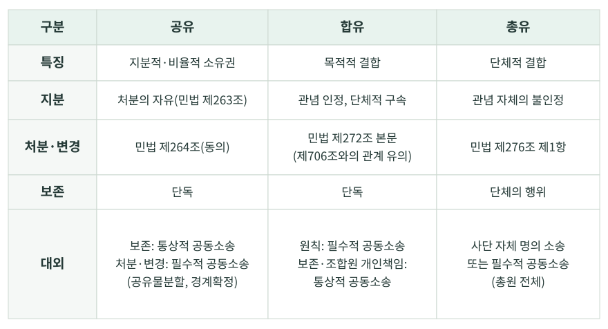
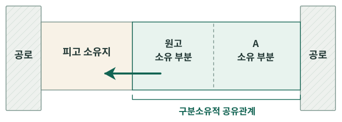

공동소유는 하나의 물건을 2인 이상의 다수 사람이 공동으로 소유하는 것이다. 가령, 물건을 공동으로 사용하기 위해 구매한 경우, 동업관계에서 물권을 취득하는 경우, 종중과 교회와 같은 단체가 물건을 매수하는 경우 등은 (사실적으로만 보면) 1인의 매도인과 수인의 매수인 측의 법률관계로서 대금지급의무, 목적물인도의무, 소유권 귀속이 누구에게 이루어지고, 귀속된 권리와 의무의 내용이 무엇인지의 문제가 발생한다. 공동상속이 이루어진 경우에도 마찬가지이다.
현행 민법은 공동소유에 관하여 공유(민법 제262-270조), 합유(민법 제271-274조), 총유(민법 제275-277조)의 3가지 양태를 규정하고 있는데, 그중 총유는 다른 입법례에서 쉽게 찾아볼 수 없어, 우리 민법의 고유한 제도로 설명되고 있지만, 해당 사안의 분쟁 해결상 법리구성의 난점이 많다.
1. 분류
공동소유는 하나의 물건에 대한 공동소유자 상호 간의 인적 결합 정도에 따라 다음과 같이 구분하는 견해가 주류이다.
ⅰ) 공동의 목적이 없이 우연히 결합된 공유
ⅱ) 일정 사업 등 공동 목적을 위하여 결합체이지만 법인격 없는 조합의 소유인 합유
ⅲ) 법인이 아닌 사단의 소유인 총유
공유는 그 지분이 거의 독립된 소유권과 마찬가지로 다루어지는 소유형태이다. 총유에는 지분이라는 개념이 인정되지 않는다. 합유에서는 지분이 인정되나 지분의 처분 등에 일정한 제한을 받는다. 그밖에 소유권의 수익 권능과 관리 권능이 다수인에게 어떻게 귀속되느냐에 따라, ⅰ) 2가지 모두가 각 공동소유자에게 속하면 공유, 관리기능은 공동소유자 전원에게 귀속하나 각 공동소유자가 일정 범위 내에서만 사용․수익할 수 있을 뿐이면 총유, 그 중간이면 합유라고 설명할 수 있겠으나, ⅱ) 이러한 설명은 공동소유의 형태를 어느 관점에서 보았느냐에 따라 차이가 있을 뿐이고 위 2가지 분류관점을 결합함으로써 공유․합유․총유의 특질을 보다 정확하게 파악할 수 있다고도 설명할 수 있다.
공동소유 규율관계 개관
(가) 공동소유자 상호 간의 인적 결합의 정도에 따른 분류
- 사용수익권능과 관리처분권능의 귀속 형태 (특히 총유적 모습)
(나) 공유
- 공동목적 없는 우연한 결합형태 (예: 공동사업 경영 목적 없이 자금을 모아 공동하여 자동차를 구입한 매수인들 소유)
- 지분 중심의 독립한 소유권 유사의 기능(목적물이 하나라는 점에 따른 구속을 받을 뿐)
- 지분의 자유로운 처분과 공유물분할의 자유/공유물 전체의 처분에 대한 전원 동의
- 사용․수익권능(각자, 지분범위)과 관리(과반수), 변경․처분권능(전원)의 귀속
- 로마시기의 자유주의적 형태(공유에 따른 제한의 최소화)
(다) 총유
- 법인 아닌 사단으로서의 결합
- 게르만법 시대의 촌락공동체의 소유형태(구성원변경과 관계없이 주민 지위에서 이용 권한)
- 물건의 사용수익권능과 관리처분 권능의 분화(제276조)
- 비법인사단의 소유형태로서 총유 지분의 관념 부존재(단지 구성원 자격)
(사단일 경우 법인의 단독소유 형태와 비교)
(라) 합유
- 일정 사업 등 공동 목적을 위해 결합한 형태: 사단의 성질을 구비하는 정도는 아님(‘합수성’)
- 합유자의 지분 인정(다만 지분 처분 등에 대한 제한, 오히려 조합원자격과 함께 처분)(민 273조)
- 게르만법 시대의 공동상속에 따른 재산귀속 관계

2. 공유
(1) 의의
민법 제262조 제1항은 “물건이 지분에 의하여 수인의 소유로 된 때에는 공유로 한다.”라고 규정한다.
공유의 법리구성에 관하여, 통설은 일물일권주의의 관점에서 ‘공유는 1개의 소유권이 분량적으로 분할되어 수인에게 속하는 상태’(양적 분할설)라고 한다. 각 공유자의 지분은 1개 소유권의 분량적 일부라는 것이다. 그러므로 지분은 그 본질상 소유의 비율이지만, 효력에 있어서 소유권과 같이 취급된다. 예를 들어 甲, 乙, 丙 3인이 1동의 건물을 공유한다면, 공유자 각자가 1개의 소유권의 1/3의 지분을 가지고 있다고 말 수 있다.
판례도 “공유는 물건에 대한 공동소유의 한 형태로서 물건에 대한 1개의 소유권이 분량적으로 분할되어 여러 사람에게 속하는 것”이라고 한다(대법원 1991. 11. 12. 선고 91다27228 판결). 이와 달리 다수소유권경합설을 취하여 “공유자가 각기 하나의 소유권을 가지고 단지 각 공유자가 가지는 각 소유권이 일정한 비율에 의하여 제한되는 것”이라고 한 판결도 있다(대법원 1965. 11. 9. 선고 65다1646 판결).
(2) 공유관계의 성립
당사자의 법률행위 또는 법률의 규정에 의하여 성립한다.
(가) 법률행위에 의한 성립
하나의 물건을 수인이 공동의 소유로 한다는 의사의 합치로 성립하며, 그 물건이 부동산이라면 등기는 공유의 등기와 공유지분의 등기를 하여야 한다(부동산등기법 제48조 참조). 공유지분도 등기하여야 하는데, 이에 관한 등기가 없는 경우에는 그 지분은 균등한 것으로 추정한다(제262조 제2항). 나아가 실제의 지분비율을 가지고 제3자에게 대항할 수 없다.
대법원 2001. 3. 9. 선고 98다51169 판결
공유물을 분할할 때 원래 공유자 사이에서는 증명된 실제 지분이 기준이다. 지분이 이전등기되어 새로운 이해관계인이 된 제3자와의 관계에서는 원칙적으로 등기부상 지분을 따른다.
강의안 수록 원문
대법원 2001. 3. 9. 선고 98다51169 판결
공유물분할청구소송에 있어 원래의 공유자들이 각 그 지분의 일부 또는 전부를 제3자에게 양도하고 그 지분이전등기까지 마쳤다면, 새로운 이해관계가 형성된 그 제3자에 대한 관계에서는 달리 특별한 사정이 없는 한 일단 등기부상의 지분을 기준으로 할 수밖에 없을 것이나, 원래의 공유자들 사이에서는 등기부상 지분과 실제의 지분이 다르다는 사실이 인정된다면 여전히 실제의 지분을 기준으로 삼아야 할 것이고 등기부상 지분을 기준으로 하여 그 실제의 지분을 초과하거나 적게 인정할 수는 없다.
(나) 법률 규정에 의한 성립
i) 수인 공동의 무주물선점(제252조)․유실물습득(제259조)․매장물발견(제254조), ii) 타인의 물건에서 매장물발견(제254조 단서), iii) 주종을 구별할 수 없는 동산의 부합(제257조)․혼화(제258조), iv) 공유물의 과실(제102조), v) 건물 구분소유에서의 공용부분(제215조, 집합건물의 소유 및 관리에 관한 법률 제10조 1항, 제3조 1항), vi) 경계에 설치된 경계표․담․구거(제239조) 등이 있다.
공동상속재산(제1006조) 및 공동포괄수유재산(제1078조)에 관해서는 민법 제1006조가 “상속인이 수인인 때에는 상속재산은 그 공유로 한다.”는 의미의 해석을 놓고서 공유설과 합유설로 나뉘어 있다. 판례는 공유설의 태도를 취한다.
(다) 상호명의신탁(구분소유적 공유관계) (보론 참고)
(3) 지분과 지분권
지분은 각 공유자가 공유물에 대하여 가지는 소유의 비율이고, 지분에 기하여 각 공유자가 공유물에 대하여 가지는 권리는 지분권이다. 주의할 바는, 지분은 “1/2”이라고 하는 바와 같이 관념적 형태로 나타나고, 해당 공유물의 특정 부분을 표현하지 않는다(사용 등 관리방법의 결정에 관한 지분의 의미와 연결).
(가) 지분의 비율
지분의 비율은 공유자의 의사표시나 법률의 규정으로 정해진다. 단, 불분명한 경우에는 균등한 것으로 추정된다(제262조 제2항). 부동산의 공유지분의 비율은 등기하여야 하며(부동산등기법 제44조), 등기하지 않으면 균등한 것으로 추정된다.
(나) 지분권의 처분
공유자는 그 지분권을 처분할 수 있다(제269조). 즉, 지분권은 하나의 독립된 소유권과 같이 각 공유자는 다른 공유자의 동의 없이 자유로이 자신의 지분을 처분(양도 및 담보제공 등)할 수 있다. 만약 공유자 간에 지분처분금지특약을 한 경우 이러한 특약은 채권적 효력을 가질 뿐이다(통설). 다만, 집합건물의 경우 그 특성에 비추어, 구분건물의 소유자는 그가 소유하는 전유부분과 분리하여 공유부분에 대한 지분이나 대지사용권에 대한 지분을 처분할 수 없다[집합건물의 소유 및 관리에 관한 법률 제13조(전유부분과 공용부분에 대한 지분의 일체성)].
대법원 2008. 4. 24. 선고 2008다5073 판결
공유자가 토지 전부를 무단으로 팔아도 자기 지분에 관한 이전등기는 유효하다. 다른 공유자의 처분 동의는 당사자가 주장해야 하지만, 소송자료 전체에 그 주장이 포함되어 있다고 볼 수도 있다.
강의안 수록 원문
대법원 2008. 4. 24. 선고 2008다5073 판결
공유자 중 1인이 다른 공유자의 동의 없이 그 공유 토지를 매도하여 타인 명의로 소유권이전등기가 마쳐졌다면, 그 매도 토지에 관한 소유권이전등기는 처분공유자의 공유지분 범위 내에서는 실체관계에 부합하는 유효한 등기라고 보아야 한다. 따라서 원고가 공유물의 보존행위로서 피고 명의의 소유권이전등기 전부에 관한 말소를 구하는 이 사건에서, 다른 공유자가 타인이 자신의 지분을 피고에게 처분하는 데 사전 동의하였다는 사실은 위 소유권이전등기가 실체관계에 부합하는 유효한 등기라는 법률효과를 발생시키는 실체법상의 구성요건 해당사실에 속하므로, 법원은 변론에서 당사자가 주장하지 않는 이상 이를 인정할 수 없으나, 이와 같은 주장은 반드시 명시적인 것이어야 하는 것은 아니고 당사자의 주장 취지에 비추어 이러한 주장이 포함되어 있는 것으로 볼 수 있으면 족하며, 또한 반드시 주장책임을 지는 당사자가 진술하여야 하는 것은 아니고 소송에서 쌍방 당사자 간에 제출된 소송자료를 통하여 심리가 됨으로써 그 주장의 존재를 인정하더라도 상대방에게 불의의 타격을 줄 우려가 없는 경우에는 그 주장이 있는 것으로 보아 이를 재판의 기초로 삼을 수 있다.
(다) 지분권의 탄력성
지분권은 하나의 독립된 소유권과 같은 성질을 가지므로 탄력성이 있다. 즉, 공유자가 그 지분을 포기하거나, 상속인 없이 사망한 때에는 그 지분권은 다른 공유자에게 각 지분의 비율로 귀속한다(제267조). 구분건물의 소유자가 갖는 대지사용권에 대한 지분에는 민법 제267조의 적용이 배제된다(집합건물의 소유 및 관리에 관한 법률 제22조).
대법원 2016. 10. 27. 선고 2015다52978 판결
부동산 공유지분의 포기는 다른 공유자에게 하는 단독행위다. 의사표시가 도달하면 다른 공유자는 지분이전등기를 청구할 수 있고, 등기를 마친 때 지분이 이전된다.
강의안 수록 원문
대법원 2016. 10. 27. 선고 2015다52978 판결
민법 제267조는 “공유자가 그 지분을 포기하거나 상속인 없이 사망한 때에는 그 지분은 다른 공유자에게 각 지분의 비율로 귀속한다.”라고 규정하고 있다. 여기서 공유지분의 포기는 법률행위로서 상대방 있는 단독행위에 해당하므로, 부동산 공유자의 공유지분 포기의 의사표시가 다른 공유자에게 도달하더라도 이로써 곧바로 공유지분 포기에 따른 물권변동의 효력이 발생하는 것은 아니고, 다른 공유자는 자신에게 귀속될 공유지분에 관하여 소유권이전등기청구권을 취득하며, 이후 민법 제186조에 의하여 등기를 하여야 공유지분 포기에 따른 물권변동의 효력이 발생한다. 그리고 부동산 공유자의 공유지분 포기에 따른 등기는 해당 지분에 관하여 다른 공유자 앞으로 소유권이전등기를 하는 형태가 되어야 한다.
(라) 지분권의 주장
지분권은 하나의 독립된 소유권과 같이 취급되어 공유자가 단독으로 다른 공유자 및 제3자에 대하여 그의 지분권을 주장할 수 있다. 공유자 1인의 지분권에 따른 권리행사의 내용으로는, 가령 ① 공유권 또는 지분권 확인의 소, ② 지분의 이전청구 또는 말소청구, ③ 공유물의 침해에 따라 지분에 기한 반환 또는 배상청구의 가부가 문제 된다. 각 청구를 그 상대방이 다른 공유자인지, 제3자인지 등에 따라 검토해 본다.
(a) 공유권 또는 지분권 확인의 소
공유물 전체에 대한 소유관계 확인을 구하는 ‘공유권 확인의 소’는 공유자 전원이 해야 하지만(남의 권리도 자기가 확인할 필요가 있을까?, 뒤의 (5) 참고), ‘지분권 확인의 소’는 각 공유자가 가지는 권리 확인을 구하는 것이므로, 자기의 지분을 부인하는 다른 공유자에 대해서는 물론, 제3자에 대해서도 단독으로 소를 제기할 수 있다.
대법원 1994. 11. 11. 선고 94다35008 판결
각 공유자는 자기 지분의 확인을 구할 수 있다. 다른 공유자의 지분까지 확인받으려면 그 권리관계가 자기 권리에 영향을 미치는 등 별도의 확인의 이익이 필요하다.
강의안 수록 원문
대법원 1994. 11. 11. 선고 94다35008 판결
가. 공유자의 지분은 다른 공유자의 지분에 의하여 일정한 비율로 제한을 받는 것을 제외하고는 독립한 소유권과 같은 것으로 공유자는 그 지분을 부인하는 제3자에 대하여 각자 그 지분권을 주장하여 지분의 확인을 소구하여야 하는 것이고, 공유자 일부가 제3자를 상대로 다른 공유자의 지분의 확인을 구하는 것은 타인의 권리관계의 확인을 구하는 소에 해당한다고 보아야 할 것이므로 그 타인 간의 권리관계가 자기의 권리관계에 영향을 미치는 경우에 한하여 확인의 이익이 있다고 할 것이며, 공유물 전체에 대한 소유관계 확인도 이를 다투는 제3자를 상대로 공유자 전원이 하여야 하는 것이지 공유자 일부만이 그 관계를 대외적으로 주장할 수 있는 것이 아니므로, 아무런 특별한 사정이 없이 다른 공유자의 지분의 확인을 구하는 것은 확인의 이익이 없다.
나. 공유자가 다른 공유자의 지분권을 대외적으로 주장하는 것을 공유물의 멸실·훼손을 방지하고 공유물의 현상을 유지하는 사실적·법률적 행위인 공유물의 보존행위에 속한다고 할 수 없다.
(b) 지분의 이전 또는 말소등기청구
① 제3자에 대한 청구
공유물이 타인(예컨대 매도인)의 단독명의로 등기된 경우, 각 공유자는 단독으로 ‘자기 지분의 이전등기’를 청구할 수 있다. 또한, 공유부동산이 원인 없이 타인 명의로 등기된 경우, 공유자 1인은 단독으로 지분권에 기하여 자기 지분비율에 따른 말소등기청구를 할 수 있음은 물론, ‘전체에 관한 말소등기’도 청구할 수도 있다(통설, 논리적 근거: 보존행위에 포섭, 지분권의 성격에 따른 불가분채권의 유추: 방해배제와 연관해 이해).
대법원 1993. 5. 11. 선고 92다52870 판결
제3자가 공유부동산 전부에 원인무효의 이전등기를 했다면 각 공유자는 보존행위로 그 등기 전부의 말소를 청구할 수 있다.
강의안 수록 원문
대법원 1993. 5. 11. 선고 92다52870 판결
부동산의 공유자의 1인은 당해 부동산에 관하여 제3자 명의로 원인무효의 소유권이전등기가 경료되어 있는 경우 공유물에 관한 보존행위로서 제3자에 대하여 그 등기 전부의 말소를 구할 수 있다.
대법원 2002. 7. 9. 선고 2001다43922, 43939 판결
여러 사람이 이전등기청구권을 보전하는 가등기를 마쳤다면 원칙적으로 각자가 자기 지분의 본등기를 청구할 수 있다. 명의신탁 해지로 생긴 청구권을 매매예약 명목으로 가등기한 경우도 같다.
강의안 수록 원문
대법원 2002. 7. 9. 선고 2001다43922, 43939 판결
공유자가 다른 공유자의 동의 없이 공유물을 처분할 수는 없으나 그 지분은 단독으로 처분할 수 있으므로, 복수의 권리자가 소유권이전청구권을 보존하기 위하여 가등기를 마쳐 둔 경우 특별한 사정이 없는 한 그 권리자 중 한 사람은 자신의 지분에 관하여 단독으로 그 가등기에 기한 본등기를 청구할 수 있고, 이는 명의신탁해지에 따라 발생한 소유권이전청구권을 보존하기 위하여 복수의 권리자 명의로 가등기를 마쳐 둔 경우에도 마찬가지이며, 이 때 그 가등기 원인을 매매예약으로 하였다는 이유만으로 가등기 권리자 전원이 동시에 본등기절차의 이행을 청구하여야 한다고 볼 수 없다.
대법원 2010. 1. 14. 선고 2009다67429 판결
무효등기의 말소를 구하는 공유자는 자신의 권원을 증명해야 한다. 다른 공유자의 지분만 침해한 등기를 자기 보존권으로 말소할 수 없다.
강의안 수록 원문
대법원 2010. 1. 14. 선고 2009다67429 판결
원고가 피고에 대하여 피고 명의로 마쳐진 소유권보존등기의 말소를 구하려면 먼저 원고에게 그 말소를 청구할 수 있는 권원이 있음을 적극적으로 주장·증명하여야 하며, 만일 원고에게 이러한 권원이 있음이 인정되지 않는다면 설사 피고 명의의 소유권보존등기가 말소되어야 할 무효의 등기라고 하더라도 원고의 청구를 인용할 수 없다 할 것인바, 부동산의 공유자의 1인은 당해 부동산에 관하여 제3자 명의로 원인무효의 소유권이전등기가 경료되어 있는 경우 공유물에 관한 보존행위로서 제3자에 대하여 그 등기 전부의 말소를 구할 수 있으나, 공유자가 다른 공유자의 지분권을 대외적으로 주장하는 것을 공유물의 멸실·훼손을 방지하고 공유물의 현상을 유지하는 사실적·법률적 행위인 공유물의 보존행위에 속한다고 할 수 없으므로, 자신의 소유지분을 침해하는 지분 범위를 초과하는 부분에 대하여 공유물에 관한 보존행위로서 무효라고 주장하면서 그 부분 등기의 말소를 구할 수는 없다(☞ 원고가 자신의 공유지분이 아닌 다른 공유자의 공유지분에 근거한 보존행위로서 말소등기를 구한 사안).
대법원 2014. 10. 27. 선고 2013다25217 판결
시효취득에 따른 이전등기청구권의 공동상속인은 자기 상속지분을 보전하는 데 필요한 범위에서만 채무자의 말소등기청구권을 대위할 수 있다.
강의안 수록 원문
대법원 2014. 10. 27. 선고 2013다25217 판결
채무자 소유의 부동산을 시효취득한 채권자의 공동상속인이 채무자에 대한 소유권이전등기청구권을 피보전채권으로 하여 제3채무자를 상대로 채무자의 제3채무자에 대한 소유권이전등기의 말소등기청구권을 대위행사하는 경우, 공동상속인은 자신의 지분 범위 내에서만 채무자의 제3채무자에 대한 소유권이전등기의 말소등기청구권을 대위행사할 수 있고, 지분을 초과하는 부분에 관하여는 채무자를 대위할 보전의 필요성이 없다(☞ 甲이 사망한 乙의 丙에 대한 점유취득시효를 원인으로 한 소유권이전등기청구권 중 일부 지분을 상속받았다고 주장하면서 丁을 상대로 丙의 丁에 대한 소유권이전등기의 말소등기청구권을 대위하여 전부 말소를 구한 사안).
대법원 2015. 1. 29. 선고 2014다49425 판결
공동상속인 한 사람이 무효인 계약으로 전부를 단독등기하면 다른 상속인은 원칙적으로 등기명의인의 상속분을 뺀 나머지의 말소를 구할 수 있다. 다만 현 상태를 유지하려는 다른 상속인의 이해와 충돌하는 부분은 보존행위가 될 수 없다.
강의안 수록 원문
대법원 2015. 1. 29. 선고 2014다49425 판결
부동산의 공유자 중 1인은 당해 부동산에 관하여 무효의 소유권이전등기가 경료되어 있는 경우에 민법 제265조 단서에서 정하는 공유물에 관한 보존행위로서 자신의 공유지분을 넘어서 그 무효인 등기 전부의 말소를 청구할 수 있다. 따라서 공동상속에 의하여 여러 사람의 공유로 된 부동산에 관하여 공동상속인 중 1인이 피상속인과의 사이에 행하여졌다는 매매 등 효력 없는 계약을 원인으로 하여 공유물 전부에 관하여 소유권이전등기를 경료한 경우에도, 다른 상속인은 공유물에 관한 보존행위로서 등기명의인의 상속분을 제외한 나머지 공유지분 전부에 관하여 그 소유권이전등기의 말소등기절차를 이행할 것을 청구할 수 있다(대법원 1982. 3. 9. 선고 81다464 판결, 대법원 1988. 2. 23. 선고 87다카961 판결 등 참조).
한편 공유물의 보존행위는 공유물의 멸실·훼손을 방지하고 그 현상을 유지하기 위하여 하는 사실적 법률적 행위로서 이러한 공유물의 보존행위를 각 공유자가 단독으로 할 수 있도록 한 취지는 그 보존행위가 긴급을 요하는 경우가 많고 다른 공유자에게도 이익이 되는 것이 보통이기 때문이므로, 어느 공유자가 보존권을 행사하는 때에 그 행사의 결과가 다른 공유자의 이해와 충돌될 때에는 그 행사는 보존행위로 될 수 없다고 보아야 한다(대법원 1995. 4. 7. 선고 93다54736 판결, 대법원 2008. 12. 11. 선고 2006다83932 판결 참조). [☞ 다른 공유자(상속인)이 피고의 수증 주장이 받아들여지지 않더라도 새로 증여하여 그 현상을 유지하겠다는 취지라면, 원고의 보존권 행사 결과가 다른 공유자의 이해와충돌하므로 보존행위를 할 수 없다고 본 사안]
대법원 2023. 12. 7. 선고 2023다273206 판결
원인무효 등기로 자기 지분을 침해당한 공유자만 보존행위로 말소를 구할 수 있다. 등기가 특정 공유자의 지분에만 마쳐졌다면 나머지 공유자는 말소를 청구할 수 없다.
강의안 수록 원문
대법원 2023. 12. 7. 선고 2023다273206 판결
부동산의 공유자의 1인은 당해 부동산에 관하여 제3자 명의로 원인무효의 소유권이전등기가 마쳐져 있는 경우 공유물에 관한 보존행위로서 제3자에 대하여 그 등기전부의 말소를 구할 수 있으나, 공유자가 다른 공유자의 지분권을 대외적으로 주장하는 것을 공유물의 멸실⋅훼손을 방지하고 공유물의 현상을 유지하는 사실적⋅법률적 행위인 공유물의 보존행위에 속한다고 할 수는 없으므로, 자신의 소유지분 범위를 초과하는 부분에 관하여 마쳐진 등기에 대하여 공유물에 관한 보존행위로서 무효라고 주장하면서 말소를 구할 수는 없다. 결국 공유물에 관한 원인무효의 등기에 대하여 모든 공유자가 항상 공유물의 보존행위로서 말소를 구할 수 있는 것은 아니고, 원인무효의 등기로 인하여 자신의 지분이 침해된 공유자에 한하여 공유물의 보존행위로서 그 등기의 말소를 구할 수 있을 뿐이므로, 원인무효의 등기가 특정 공유자의 지분에만 한정하여 마쳐진 경우에는 그로 인하여 지분을 침해받게 된 특정 공유자를 제외한 나머지 공유자들은 공유물의 보존행위로서 위 등기의 말소를 구할 수는 없다.
② 다른 공유자에 대한 청구
공유부동산에 대하여 공유자 1인의 단독명의로 등기된 경우 다른 공유자는 공동명의로 고쳐서 자기의 지분권을 표시하도록 하는 청구를 단독으로 할 수 있다. 그러나 단독명의자도 공유자이기 때문에 자신의 지분에 관한 한 실체관계에 부합하므로, 다른 공유자가 그 등기의 전부의 말소를 청구할 수는 없다.
[예시상황] 공유부동산이 공유자 1인의 단독명의로 등기되어 있는 경우, 공동상속의 경우로서 가령 A, B, C, D 공동상속인의 상속재산에 관하여, A가 서류를 위조하여 자신 단독 명의로 등기해 둔 경우에, B가 자신의 상속지분의 말소 이외에 공유재산의 보존행위를 이유로 하여 C, D의 지분에 해당하는 이전등기의 말소를 구할 수 있는지 여부
대법원 1988. 2. 23. 선고 87다카961 판결
상속부동산을 한 상속인이 부정하게 단독등기한 경우, 지분을 침해받은 다른 상속인 한 명이 등기명의인의 정당한 상속지분을 제외한 전부의 말소를 구할 수 있다.
강의안 수록 원문
대법원 1988. 2. 23. 선고 87다카961 판결
부동산의 공유자의 1인은 당해 부동산에 관하여 제3자 명의로 원인무효의 소유권이전등기가 경료되어 있는 경우 공유물에 관한 보존행위로서 제3자에 대하여 그 등기전부의 말소를 구할 수 있으므로 상속에 의하여 수인의 공유로 된 부동산에 관하여 그 공유자 중의 1인이 부정한 방법으로 공유물 전부에 관한 소유권이전등기를 그 단독명의로 경료함으로써 타의 공유자가 공유물에 대하여 갖는 권리를 방해한 경우에 있어서는 그 방해를 받고 있는 공유자 중의 1인은 공유물의 보존행위로서 위 단독명의로 등기를 경료하고 있는 공유자에 대하여 그 공유자의 공유지분을 제외한 나머지 공유지분 전부에 관하여 소유권이전등기말소등기절차의 이행을 구할 수 있다.
대법원 1995. 4. 7. 선고 93다54736 판결
각 공유자가 단독으로 보존행위를 할 수 있는 것은 현상 유지가 보통 다른 공유자에게도 이익이 되기 때문이다. 행사의 결과가 다른 공유자의 이해와 충돌하면 보존행위로 볼 수 없다.
강의안 수록 원문
대법원 1995. 4. 7. 선고 93다54736 판결
공유물의 보존행위는 공유물의 멸실 훼손을 방지하고 그 현상을 유지하기 위하여 하는 사실적 법률적 행위로서 이러한 공유물의 보존행위를 각 공유자가 단독으로 할 수 있도록 한 취지는 그 보존행위가 긴급을 요하는 경우가 많고 다른 공유자에게도 이익이 되는 것이 보통이기 때문이므로 어느 공유자가 보존권을 행사하는 때에 그 행사의 결과가 다른 공유자의 이해와 충돌될 때에는 그 행사는 보존행위로 될 수 없다고 보아야 한다.
*앞에서 본 대법원 2010. 1. 14. 선고 2009다67429 판결도 참조
(c) 지분의 침해에 대한 반환청구 또는 방해배제청구
① 제3자에 대한 청구
공유물에 관하여 제3자가 침해를 가하는 경우, 각 공유자는 지분권에 기한 물권적 청구권으로서 제3자에 대하여 지분비율에 따른 반환청구권 내지 방해배제청구권을 단독으로 행사할 수 있다.
그리고 지분권은 어느 부분으로 특정되어 있지 않기 때문에 공유물 전체에 미치는 소유권의 실질을 가지므로 공유물 전체에 대한 방해배제청구가 인정된다. 인도 또는 반환청구에 관해서도 단독 청구할 수 있다. 그 근거로서, 판례와 일부 학설은 방해배제 청구 및 반환 청구가 보존행위에 속하므로 단독으로도 청구할 수 있다고 본다(대법원 1962. 4. 12. 선고 4294민상1242 판결; 대법원 1993. 5. 11 선고 92다52870 판결 참조 → (b)의 참고판례 참조). 반면, 공유물은 불가분이므로 불가분채권(민법 제409조)을 유추적용하여 그와 마찬가지로 각 공유자가 단독으로 모든 공유자를 위하여 반환청구를 할 수 있다고 설명하는 견해도 있다.
다만, 공유자 1인이 침해자인 제3자에 대하여 공유물 전부의 인도를 단독으로 청구할 수는 있더라도, 그 침해에 따른 부당이득, 불법행위에 기한 청구는 자신의 지분에 한정해서만 가능하다.
② 다른 공유자에 대한 청구
공유자가 다른 공유자의 지분을 침해하고 있거나 불법점유하고 있는 경우, 다른 공유자는 그 방해를 배제하거나 반환을 청구할 수 있다.
i) 공유자 1인이 소수지분권자임에도 공유물 전체를 배타적․독점적으로 사용하고 있는 경우, 다른 공유자가 단독으로 보존행위로서 공유물 전부의 인도를 청구할 수 없고, 다만 방해배제를 청구할 수 있다.
대법원 2020. 5. 21. 선고 2018다287522 전원합의체 판결
소수지분권자가 공유물을 독점해도 다른 소수지분권자가 자신에게 인도하라고 할 수는 없다. 자기 지분권에 기초해 방해물 제거, 출입 방해 금지 등 공동점유 회복에 필요한 조치를 청구할 수 있다.
대조 메모 강의안 표제에는 전원합의체 표시가 생략되어 있다. 이 판결은 종전 93다9392, 9408 전원합의체 판결 등을 배치되는 범위에서 변경했다.
강의안 수록 원문
대법원 2020. 5. 21. 선고 2018다287522 판결
[1] 공유물의 소수지분권자인 피고가 다른 공유자와 협의하지 않고 공유물의 전부 또는 일부를 독점적으로 점유하는 경우 소수지분권자인 원고가 피고를 상대로 공유물의 인도를 청구할 수는 없다고 보아야 한다.
(1) 공유자 중 1인인 피고가 공유물을 독점적으로 점유하고 있어 다른 공유자인 원고가 피고를 상대로 공유물의 인도를 청구하는 경우, 그러한 행위는 공유물을 점유하는 피고의 이해와 충돌한다. 애초에 보존행위를 공유자 중 1인이 단독으로 할 수 있도록 한 것은 보존행위가 다른 공유자에게도 이익이 되기 때문이라는 점을 고려하면, 이러한 행위는 민법 제265조 단서에서 정한 보존행위라고 보기 어렵다.
(2) 모든 공유자는 공유물 전부를 지분의 비율로 사용·수익할 수 있다(민법 제263조). 피고가 공유물을 독점적으로 점유하는 위법한 상태를 시정한다는 명목으로 원고의 인도 청구를 허용한다면, 피고가 적법하게 보유하는 ‘지분 비율에 따른 사용·수익권’까지 근거 없이 박탈하는 부당한 결과를 가져온다.
(3) 원고 역시 소수지분권자에 지나지 않으므로 원고가 공유자인 피고를 전면적으로 배제하고 자신만이 단독으로 공유물을 점유하도록 인도해 달라고 청구할 권원은 없다.
(4) 공유물에 대한 인도 판결과 그에 따른 집행의 결과는 원고가 공유물을 단독으로 점유하며 사용·수익할 수 있는 상태가 되어 ‘일부 소수지분권자가 다른 공유자를 배제하고 공유물을 독점적으로 점유’하는 인도 전의 위법한 상태와 다르지 않다.
(5) 기존 대법원 판례가 공유자 사이의 공유물 인도 청구를 보존행위로서 허용한 것은, 소수지분권자가 자의적으로 공유물을 독점하고 있는 위법 상태를 시정하기 위해서 인도 청구를 가장 실효적인 구제수단으로 보았기 때문이라고 할 수 있다. 그러나 원고는 피고를 상대로 지분권에 기한 방해배제청구권을 행사함으로써 위와 같은 위법 상태를 충분히 시정할 수 있다.
[2] 공유자들 사이에 공유물 관리에 관한 결정이 없는 경우 공유자가 다른 공유자를 배제하고 공유물을 독점적으로 점유·사용하는 것은 위법하여 허용되지 않지만, 다른 공유자의 사용·수익권을 침해하지 않는 방법으로, 즉 비독점적인 형태로 공유물 전부를 다른 공유자와 함께 점유·사용하는 것은 자신의 지분권에 기초한 것으로 적법하다. 일부 공유자가 공유물의 전부나 일부를 독점적으로 점유한다면 이는 다른 공유자의 지분권에 기초한 사용·수익권을 침해하는 것이다. 공유자는 자신의 지분권 행사를 방해하는 행위에 대해서 민법 제214조에 따른 방해배제청구권을 행사할 수 있고, 공유물에 대한 지분권은 공유자 개개인에게 귀속되는 것이므로 공유자 각자가 행사할 수 있다.
원고는 공유물의 종류(토지, 건물, 동산 등), 용도, 상태(피고의 독점적 점유를 전·후로 한 공유물의 현황)나 당사자의 관계 등을 고려해서 원고의 공동 점유를 방해하거나 방해할 염려 있는 피고의 행위와 방해물을 구체적으로 특정하여 그 방해의 금지, 제거, 예방(작위·부작위의무의 이행)을 구하는 형태로 청구취지를 구성할 수 있다. 법원은 이것이 피고의 방해 상태를 제거하기 위하여 필요하고 원고가 달성하려는 상태가 공유자들의 공동 점유 상태에 부합한다면 이를 인용할 수 있다. 위와 같은 출입 방해금지 등의 부대체적 작위의무와 부작위의무는 간접강제의 방법으로 민사집행법에 따라 충분히 실효성 있는 강제집행을 할 수 있다.
[3] 이와 달리 공유물의 소수지분권자가 다른 공유자와 협의 없이 공유물의 전부 또는 일부를 독점적으로 점유하고 있는 경우 다른 소수지분권자가 공유물에 대한 보존행위로서 그 인도를 청구할 수 있다고 판단한 대법원 1994. 3. 22. 선고 93다9392, 93다9408 전원합의체 판결 등은 이 판결의 견해에 배치되는 범위에서 이를 변경하기로 한다.
판결의 의미
원고는 이 사건 토지의 1/2 지분을 소유하고 있는 소수지분권자로서, 그 지상에 소나무를 식재하여 토지를 독점적으로 점유하고 있는 피고를 상대로 소나무 등 지상물의 수거와 점유 토지의 인도 등을 청구한 사안에서, 원심은 원고가 공유물의 보존행위로서 공유 토지에 대한 방해배제와 인도를 청구할 수 있다고 보아 원고의 청구를 모두 받아들였음. 대법원은 원고가 공유자인 피고를 상대로 토지 인도를 청구할 수는 없고 방해배제로 지상물 수거를 청구할 수 있다고 보아, 원심 판결 중 토지 인도 청구 부분을 법리 오해로 파기하고, 토지 인도 청구가 인용될 것을 전제로 한 일부 금원 지급 청구 부분도 함께 파기하였음
대법원 2020. 9. 7. 선고 2017다204810 판결
일부 구분점포의 구획이 없어지면 그 부분만 종전 소유자들의 공유가 된다. 이를 독점하는 자에게 소수지분권자는 공동점유를 위한 방해배제를 구할 수 있으나 자기에게 인도하라고 청구할 수는 없다.
강의안 수록 원문
대법원 2020. 9. 7. 선고 2017다204810 판결
[1] 구분건물로 등기된 1동의 건물 중 일부에 해당하는 구분건물들 사이에서 구조상의 구분이 소멸되는 경우에 그 구분건물에 해당하는 일부 건물 부분은 종전 구분건물 등기명의자의 공유로 된다. 구조상의 독립성이 상실되지 아니한 나머지 구분건물들의 구분소유권은 그대로 유지됨에 따라 그 일부 건물 부분은 나머지 구분건물들과 독립되는 구조를 이룬다고 할 것이고, 또한 집합건물 중 일부 구분건물에 대한 공유도 당연히 허용되므로 그 일부 건물 부분과 나머지 구분건물들로 구성된 1동의 건물 전체는 집합건물의 소유 및 관리에 관한 법률의 적용을 받는다. 공유자 사이에 공유물을 사용·수익할 구체적인 방법을 정하는 것은 공유물의 관리에 관한 사항으로서 공유자 지분의 과반수로써 결정하여야 한다.
[2] 공유물의 소수지분권자가 다른 공유자와 협의 없이 공유물의 전부 또는 일부를 독점적으로 점유·사용하고 있는 경우 다른 소수지분권자는 공유물의 보존행위로서 그 인도를 청구할 수는 없고, 다만 자신의 지분권에 기초하여 공유물에 대한 방해 상태를 제거하거나 공동 점유를 방해하는 행위의 금지 등을 청구할 수 있다.
[3] 상가건물의 시설관리와 임대대행권을 취득한 甲 주식회사가 위 상가건물의 구분소유자 전체의 동의를 받지 아니하고 상가 4, 5층의 내부시설을 철거한 후 사우나를 설치함으로써 그 구분점포들 사이의 구분이 폐지되었는데, 구분폐지되어 하나의 공유물이 된 전유부분에 대한 공유지분 과반수의 동의를 얻지 못한 채 구분폐지 전 구분소유자였던 공유지분권자로부터 점유할 권리를 이전받은 乙이 4층 전유부분 중 일부인 매점 및 식당 부분을 단독으로 점유·사용하자 4층 일부의 구분점포에 관한 소유권이전등기를 마친 丙이 乙을 상대로 매점 및 식당 부분의 인도를 구한 사안에서, 4층 구분점포의 구분소유자들은 상가 전체의 전유부분에 대한 공유지분권을 취득하는 것이 아니라 구분이 폐지되어 하나의 공유물이 된 전유부분에 한하여 구분소유권의 비율에 따라 공유지분권을 취득하는바, 소수지분권자인 丙으로서는 구분폐지되어 하나의 공유물이 된 전유부분에 한하여 그 공유지분권에 따라 공유물의 보존행위로서 위 전유부분 중 일부인 매점 및 식당 부분을 단독으로 점유·사용하는 乙을 상대로 방해 상태를 제거하거나 공동 점유를 방해하는 행위의 금지 등을 청구할 수 있을 뿐인데도, 상가 전체를 하나의 공유물로 보고 그 보존행위로서 인도청구를 받아들인 원심판단에 법리오해의 잘못이 있다고 한 사례.
대법원 2020. 10. 15. 선고 2019다245822 판결
집합건물 공용부분을 구분소유자가 결의나 동의 없이 독점하는 경우에도 다른 구분소유자는 인도 자체를 청구할 수 없다. 공동사용을 방해하는 상태의 제거·예방은 청구할 수 있다.
강의안 수록 원문
대법원 2020. 10. 15. 선고 2019다245822 판결
공유물의 소수지분권자가 다른 공유자와 협의 없이 공유물의 전부 또는 일부를 독점적으로 점유·사용하고 있는 경우 다른 소수지분권자는 공유물의 보존행위로서 그 인도를 청구할 수는 없고, 다만 자신의 지분권에 기초하여 공유물에 대한 방해 상태를 제거하거나 공동 점유를 방해하는 행위의 금지 등을 청구할 수 있다.
이러한 법리는 집합건물의 소유 및 관리에 관한 법률(이하 ‘집합건물법’이라 한다)에 따라 구분소유자 전원 또는 일부의 공유에 속하고(제10조 제1항), 공유자가 그 용도에 따라 사용할 수 있는 집합건물의 공용부분(제11조)에도 마찬가지로 적용된다. 따라서 집합건물의 구분소유자가 집합건물법의 관련 규정에 따라 관리단집회 결의나 다른 구분소유자의 동의 없이 공용부분의 전부 또는 일부를 독점적으로 점유·사용하고 있는 경우 다른 구분소유자는 공용부분의 보존행위로서 그 인도를 청구할 수는 없고, 특별한 사정이 없는 한 자신의 지분권에 기초하여 공용부분에 대한 방해 상태를 제거하거나 공동 점유를 방해하는 행위의 금지 등을 청구할 수 있다.
ii) 공유물 일부를 배타적․독점적으로 사용하는 때도 마찬가지이다.
대법원 2006. 11. 24. 선고 2006다49307, 49314 판결
지분 과반수의 합의 없이 한 공유자가 공유물을 독점적으로 쓰면, 사용하지 못한 다른 공유자에게 그 지분에 해당하는 사용이익을 반환해야 한다.
강의안 수록 원문
대법원 2006. 11. 24. 선고 2006다49307, 49314 판결
공유자는 공유물 전부를 지분의 비율로 사용·수익할 수 있고 공유물의 관리에 관한 사항은 공유자의 지분의 과반수로써 결정하는 것이므로 공유물의 구체적인 사용·수익의 방법에 관하여 공유자들 사이에 지분 과반수의 합의 없이 공유자 중의 1인이 이를 배타적으로 점유·사용하고 있다면 다른 공유자에 대하여는 그 지분에 상응하는 부당이득을 하고 있는 것이 된다.
대법원 2012. 5. 24. 선고 2010다108210 판결
원래 분양받은 구분소유자들 사이에서는 대지지분 차이만으로 부당이득이 생기지 않는다. 경매로 대지지분만 취득해 사용하지 못한 사람은 원칙적으로 반환을 구할 수 있고, 사용권을 사실상 포기한 특약이 당연히 승계되지는 않는다.
대조 메모 후속 판례에 따르면 전유면적 비율에 상응하는 적정 대지지분을 가진 구분소유자에게는 구분소유자 아닌 대지 공유자가 차임 상당액을 청구할 수 없다(대법원 2022. 8. 25. 선고 2017다257067 전원합의체 판결). 후속 판례 ↗
강의안 수록 원문
대법원 2012. 5. 24. 선고 2010다108210 판결
[1] 1동의 건물의 구분소유자들이 당초 건물을 분양받을 당시의 대지 공유지분 비율대로 건물 대지를 공유하고 있는 경우 구분소유자들은 특별한 사정이 없는 한 대지에 대한 공유지분 비율에 관계없이 건물의 대지 전부를 용도에 따라 사용할 적법한 권원이 있으므로 구분소유자들 상호 간에는 대지 공유지분 비율의 차이를 이유로 부당이득반환을 구할 수 없으나, 건물의 구분소유자 아닌 자가 경매절차 등에서 대지의 공유지분만을 취득하게 되어 대지에 대한 공유지분은 있으나 대지를 전혀 사용·수익하지 못하고 있는 경우에는 다른 특별한 사정이 없는 한 대지 공유지분권에 기한 부당이득반환청구를 할 수 있다.
[2] 공유물의 관리에 관한 사항은 공유자의 지분의 과반수로써 결정하고, 공유물의 사용·수익·관리에 관한 공유자 간의 특약은 특정승계인에게도 승계되나, 공유물에 관한 특약이 지분권자로서 사용·수익권을 사실상 포기하는 등으로 공유지분권의 본질적 부분을 침해하는 경우에는 특정승계인이 그러한 사실을 알고도 공유지분권을 취득하였다는 등 특별한 사정이 없는 한 특정승계인에게 당연히 승계된다고 볼 수 없다.
[3] 甲이 집합건물을 신축·분양하면서 수분양자인 乙 등에게 해당 전유부분과 함께 토지 중 일부 공유지분에 관한 지분소유권이전등기를 해 주고, 나머지 공유지분은 장차 건물 증축 등을 위해 남겨 두었는데, 나머지 공유지분에 관하여 설정된 근저당권에 기한 경매절차에서 丙 등이 소유권을 취득한 사안에서, 나머지 공유지분을 경매절차에서 취득하였음에도 대지에 관한 사용·수익을 전혀 하지 못하고 있는 丙 등은 토지를 배타적으로 점유·사용하고 있는 乙 등을 상대로 부당이득반환청구를 할 수 있고, 甲이 乙 등에게 집합건물의 용법에 따라 무상으로 사용할 수 있는 권한을 부여한 것으로 해석될 수 있더라도 그와 같은 약정이 丙 등에게 당연히 승계된다고 볼 수 없는데도, 이와 달리 본 원심판결에 법리오해의 위법이 있다고 한 사례.
대법원 2021. 12. 30. 선고 2021다252458 판결
과반수지분권자의 배타적 사용이 적법한 관리방법이어도, 사용에서 배제되어 손해를 본 소수지분권자에게는 지분에 해당하는 차임 상당액을 반환해야 한다.
강의안 수록 원문
대법원 2021. 12. 30. 선고 2021다252458 판결
과반수 지분권자는 공유물인 토지의 관리방법으로서 특정 부분을 배타적으로 사용·수익할 수 있으나, 그로 말미암아 그 부분을 전혀 사용·수익하지 못하여 손해를 입는 소수지분권자의 지분만큼 임료 상당 부당이득을 얻는 것이므로 이를 반환할 의무가 있다. 소수지분권자가 공유물을 자기 지분 비율로 사용·수익할 권리(민법 제263조)가 침해되었기 때문이다.
iii) 과반수의 지분권을 가진 자가 배타적으로 사용할 것을 정하는 경우, 이는 공유물의 관리방법으로서 적법하다. 다만, 소수지분공유자는 그로 인한 손해에 대하여는 과반수 지분권자에게 부당이득반환청구를 할 수 있다.
대법원 2001. 11. 27. 선고 2000다33638, 33645 판결
점유취득시효 완성 후 소수지분만 넘겨받은 사람은 나머지 지분의 이전등기를 받아 과반수지분권자가 될 시효취득자에게 건물 철거나 토지 인도를 요구할 수 없다.
강의안 수록 원문
대법원 2001. 11. 27. 선고 2000다33638, 33645 판결
공유토지에 관하여 점유취득시효가 완성된 후 취득시효 완성 당시의 공유자들 일부로부터 과반수에 미치지 못하는 소수 지분을 양수 취득한 제3자는 나머지 과반수 지분에 관하여 취득시효에 의한 소유권이전등기를 경료받아 과반수 지분권자가 될 지위에 있는 시효취득자(점유자)에 대하여 지상 건물의 철거와 토지의 인도 등 점유배제를 청구할 수 없다.
대법원 2002. 5. 14. 선고 2002다9738 판결
과반수지분권자는 배타적 사용으로 배제한 소수지분권자에게 차임 상당액을 반환한다. 과반수지분권자의 허락을 얻은 제3자는 관리권에 근거해 적법하게 점유하므로 그 점유만으로 부당이득을 반환할 의무가 없다.
강의안 수록 원문
대법원 2002. 5. 14. 선고 2002다9738 판결
과반수 지분의 공유자는 공유자와 사이에 미리 공유물의 관리방법에 관하여 협의가 없었다 하더라도 공유물의 관리에 관한 사항을 단독으로 결정할 수 있으므로 과반수 지분의 공유자는 그 공유물의 관리방법으로서 그 공유토지의 특정된 한 부분을 배타적으로 사용·수익할 수 있으나, 그로 말미암아 지분은 있으되 그 특정 부분의 사용·수익을 전혀 하지 못하여 손해를 입고 있는 소수지분권자에 대하여 그 지분에 상응하는 임료 상당의 부당이득을 하고 있다 할 것이므로 이를 반환할 의무가 있다 할 것이나, 그 과반수 지분의 공유자로부터 다시 그 특정 부분의 사용·수익을 허락받은 제3자의 점유는 다수지분권자의 공유물관리권에 터잡은 적법한 점유이므로 그 제3자는 소수지분권자에 대하여도 그 점유로 인하여 법률상 원인 없이 이득을 얻고 있다고는 볼 수 없다.
대법원 2014. 2. 27. 선고 2011다42430 판결
과반수지분권자의 결정에 따라 자기 지분 면적 이내만 썼어도, 건물을 전혀 사용하지 못한 공유자가 있다면 실제 사용한 공유자들은 그 사람의 지분에 상응하는 이익을 반환해야 한다.
강의안 수록 원문
대법원 2014. 2. 27. 선고 2011다42430 판결
공유건물에 관하여 과반수지분권을 가진 자가 공유건물의 특정된 한 부분을 배타적으로 사용·수익할 것을 정하는 것은 공유물의 관리방법으로서 적법하지만, 이 경우 비록 그 특정 부분이 자기의 지분비율에 상당하는 면적의 범위 내라 할지라도 다른 공유자들 중 지분은 있으나 사용·수익은 전혀 하고 있지 아니함으로써 손해를 입고 있는 자에 대하여는 과반수지분권자를 포함한 모든 사용·수익을 하고 있는 공유자가 그 자의 지분에 상응하는 부당이득을 하고 있다고 보아야 한다. 왜냐하면, 모든 공유자는 공유물 전부를 지분의 비율로 사용·수익할 수 있기 때문이다.
iv) 집합건물 대지 일부의 독점적 점유 사용의 경우
대법원 2007. 12. 27. 선고 2005다66374, 66381 판결
어느 한쪽도 공유토지 일부를 독점할 권리가 없어 공동사용해야 하는 경우, 다른 공유자들은 상대방의 사용권을 완전히 배제하는 토지 인도를 청구할 수 없다.
강의안 수록 원문
대법원 2007. 12. 27. 선고 2005다66374, 66381 판결
공유토지의 지하와 일정 범위의 지상 부분에 상가건물을 소유하고 있는 사람이 공유토지의 일부를 독점적으로 사용하고 있는 경우, 특정 공유자의 독점적 사용이 허용되지 않는 위 공유토지의 일부에 관하여는 공유자 전원이 공동 사용할 수밖에 없으므로 위 상가건물 소유자를 상대로 다른 공유자들이 위 소유자의 사용권을 완전히 배제시키는 토지인도청구를 할 수는 없다고 한 사례(☞ 대법원은 계쟁 토지위의 상가건물의 상부 공간에 대한 점유는 원고의 독점적 사용권이 미치는 상가건물의 상부 지상 면에관한 점유를 물리적으로 수반하게 되어 피고들 또한 이 사건 점유 부분을 독점적으로 사용할 수는 없으므로, 결국 이 사건 점유 부분은 공유자들인 원고와 피고들이 공동 사용할 수밖에 없다고 판시하였음).
대법원 2008. 3. 13. 선고 2005다15048 판결
전유부분 경매의 효력은 원칙적으로 대지사용권에도 미친다. 별도 경매에서 특정 전유부분에 대응하는 대지권임이 공시된 사안에서는 종전의 대응관계를 유지하는 묵시적 합의를 인정해, 그 전유부분 소유자가 분리된 지분의 차임 상당액 전부를 반환하게 했다.
강의안 수록 원문
대법원 2008. 3. 13. 선고 2005다15048 판결
[1] 집합건물 구분소유자의 대지사용권은 전유부분과 분리처분이 가능하도록 규약으로 정하였다는 등의 특별한 사정이 없는 한 전유부분과 종속적 일체불가분성이 인정되므로, 구분건물의 전유부분에 대한 저당권 또는 경매개시결정과 압류의 효력은 당연히 종물 내지 종된 권리인 대지사용권에까지 미치고, 그에 터잡아 진행된 경매절차에서 전유부분을 경락받은 자는 그 대지사용권도 함께 취득한다.
[2] 구 민사소송법(2002. 1. 26. 법률 제6626호로 전문 개정되기 전의 것) 제608조 제2항 및 현행 민사집행법 제91조 제2항에 의하면 매각부동산 위의 모든 저당권은 경락으로 인하여 소멸한다고 규정되어 있으므로, 집합건물의 전유부분과 함께 그 대지사용권인 토지공유지분이 일체로서 경락되고 그 대금이 완납되면, 설사 대지권 성립 전부터 토지만에 관하여 별도등기로 설정되어 있던 근저당권이라 할지라도 경매과정에서 이를 존속시켜 경락인이 인수하게 한다는 취지의 특별매각조건이 정하여져 있지 않았던 이상 위 토지공유지분에 대한 범위에서는 매각부동산 위의 저당권에 해당하여 소멸한다.
[3] 신축 당시부터 다세대주택의 각 세대 전부에 대하여 대지권등기를 하고 전유부분과 대지권이 같이 처분되어 옴으로써 각 전유부분과 해당 대지사용권(토지공유지분)이 상호대응관계를 유지하면서 일체불가분성을 갖고 있는 경우, 대지권의 성립 전에 대지에 관하여 별도등기로 설정되어 있던 근저당권이 실행됨에 따라 대지사용권(토지공유지분)이 전유부분으로부터 분리처분되었더라도, 경매개시결정부터 경락허가결정에 이르기까지 경매목적물인 토지지분이 특정 전유부분의 대지권에 해당하는 공유지분임이 충분히 공시되었다면, 이로써 대지권을 가지고 있는 구분건물 소유자들과 대지의 공유지분권자 사이에 공유물의 사용에 관한 합의의 일종으로서 구분건물에서 분리된 위 공유지분(위 경매목적물)을 분리되기 전의 전유부분을 위한 사용에 제공하여 상호관련성을 유지하기로 하는 묵시적 합의가 성립하였다고 보아야 한다. 따라서 위와 같이 대지사용권이 분리처분됨에 따라 대지권 없이 위 공유지분을 전유부분의 대지로 사용해 온 구분건물 소유자는 위 공유지분을 분리취득한 소유자에게 부당이득으로 위 공유지분에 상응하는 임료 상당액 전부를 지급해야 한다고 한 사례.
대법원 2018. 6. 28. 선고 2016다219419, 219426 판결
구분소유자가 아닌 대지 공유자는 원칙적으로 대지사용권 없는 전유부분 소유자에게 해당 전유면적 비율의 차임 상당액을 청구할 수 있다. 전유부분이 공유인 경우 그 반환채무는 특별한 사정이 없으면 불가분채무다.
대조 메모 후속 판례에 따르면 전유면적 비율에 상응하는 적정 대지지분을 가진 구분소유자에게는 구분소유자 아닌 대지 공유자가 차임 상당액을 청구할 수 없다(대법원 2022. 8. 25. 선고 2017다257067 전원합의체 판결). 후속 판례 ↗
강의안 수록 원문
대법원 2018. 6. 28. 선고 2016다219419, 219426 판결
[3] 1동 건물의 구분소유자들이 당초 건물을 분양받을 당시 대지 공유지분 비율대로 건물의 대지를 공유하고 있는 경우에는 별도의 규약이 존재하는 등 특별한 사정이 없는 한 구분소유자들이 대지에 대하여 가지는 공유지분의 비율과 상관없이 대지 전부를 용도에 따라 사용할 수 있는 적법한 권원이 있으므로, 구분소유자들 사이에서는 대지 공유지분 비율의 차이를 이유로 부당이득반환을 구할 수 없다. 그러나 그 대지에 관하여 구분소유자 외의 다른 공유자가 있는 경우에는 공유물에 관한 일반 법리에 따라 대지를 사용·수익·관리할 수 있다고 보아야 하므로, 특별한 사정이 없으면 구분소유자들이 무상으로 대지를 전부 사용·수익할 수 있는 권원을 가진다고 할 수 없고 다른 공유자는 대지 공유지분권에 기초하여 부당이득의 반환을 청구할 수 있다.
[4] 대지사용권이 없는 전유부분의 소유자는 법률상 원인 없이 전유부분의 대지를 점유하고 있으므로 대지 중 자기의 전유부분이 집합건물 전체 전유면적에서 차지하는 비율만큼의 차임에 해당하는 부당이득을 얻고 있고, 대지 지분 소유자는 그에 해당하는 손해를 입고 있다고 볼 수 있다. 따라서 특별한 사정이 없는 한 대지사용권이 없는 전유부분의 소유자는 위 지분의 소유자에게 부당이득을 반환할 의무가 있다.
대지사용권이 없는 전유부분의 공유자는 위와 같이 대지 지분 소유자에게 부당이득을 반환할 의무가 있는데, 이 의무는 특별한 사정이 없는 한 불가분채무이므로, 일부 지분만을 공유하고 있더라도 전유부분 전체 면적에 관한 부당이득을 반환할 의무가 있다.
(d) 지분권에 기한 취득시효의 중단
각 공유자는 지분권에 기하여 단독으로 자기 지분에 관하여 제3자의 취득시효를 중단시킬 수 있다. 그 효과는 자기 지분을 위해서만 발생한다.
대법원 1979. 6. 26. 선고 79다639 판결
한 공유자가 보존행위로 소를 제기해도 취득시효 중단은 그 공유자에게만 효력이 있다. 토지 지분의 일부만 시효취득하는 것도 가능하다.
강의안 수록 원문
대법원 1979. 6. 26. 선고 79다639 판결
가. 공유자의 한 사람이 공유물의 보존행위로서 제소한 경우라도, 동 제소로 인한 시효중단의 효력은 재판상의 청구를 한 그 공유자에 한하여 발생하고, 다른 공유자에게는 미치지 아니한다.
나. 토지의 공유지분 일부에 대하여도 시효취득이 가능하다.
대법원 1999. 8. 20. 선고 99다15146 판결
공유물 일부 지분에 관해서만 재판상 청구한 경우, 시효중단의 효력은 청구한 공유자와 청구 대상인 그 지분에만 미친다.
강의안 수록 원문
대법원 1999. 8. 20. 선고 99다15146 판결
부동산 공유자 중의 한 사람은 당해 부동산에 관하여 제3자 명의로 원인무효의 소유권이전등기가 경료되어 있는 경우 공유물에 관한 보존행위로서 그 제3자에 대하여 그 등기 전부의 말소를 구할 수 있으나, 공유자의 한 사람이 공유물의 보존행위로서 그 공유물의 일부 지분에 관하여서만 재판상 청구를 하였으면 그로 인한 시효중단의 효력은 그 공유자와 그 청구한 소송물에 한하여 발생한다.
(4) 공유자들 사이의 관계
(가) 공유물의 사용․수익
(a) 공유자는 공유물의 전부를 지분의 비율로 사용․수익할 수 있다(민법 제263조).
공유자가 공유물 전부를 지분비율로 사용할 수 있다고 하는 것은, 각 공유자는 (지분비율에 기한 물건의 특정 부분을 배타적으로 사용한다는 의미가 아니라) 공유물 전부를 사용할 수 있되, 다만, 사용・수익에 관하여, 가령 사용시간 등의 측면에서, 다른 공유자의 지분에 의하여 제약, 결정된다는 의미이다. 물론 구체적 사용방법․수익분배의 방법 등에 관해서는 공유자 상호 간의 협정에 의한다.
대법원 1991. 9. 24. 선고 91다23639 판결
소수지분권자가 무단으로 공유부동산을 임대하면 다른 공유자는 지분에 해당하는 차임 상당 부당이득이나 손해배상을 구할 수 있다. 임대보증금 원금 자체를 나누어 달라고 청구할 수는 없다.
강의안 수록 원문
대법원 1991. 9. 24. 선고 91다23639 판결
가. 부동산의 1/7 지분 소유권자가 타공유자의 동의없이 그 부동산을 타에 임대하여 임대차보증금을 수령하였다면, 이로 인한 수익 중 자신의 지분을 초과하는 부분에 대하여는 법률상 원인 없이 취득한 부당이득이 되어 이를 반환할 의무가 있고, 또한 위 무단임대행위는 다른 공유지분권자의 사용, 수익을 침해한 불법행위가 성립되어 그 손해를 배상할 의무가 있다.
나. 위 "가"항의 경우 반환 또는 배상해야 할 범위는 위 부동산의 임대차로 인한 차임 상당액이라 할 것으로서 타공유자는 그 임대보증금 자체에 대한 지분비율 상당액의 반환 또는 배상을 구할 수는 없다.
다. 위 "가"항의 경우 공유물의 보존행위란 공유물의 현상을 유지하기 위하여 이를 침해하는 제3자에게 그 배제를 구하는 행위를 말하므로 그 행위의 전제로서 공유자가 수령한 임대차보증금 중 자신의 지분비율 상당액의 지급을 구할 수 없다.
대법원 1995. 7. 14. 선고 94다15318 판결
무단 임대의 부당이득은 다른 공유자의 지분에 해당하는 차임 상당액이다. 미등기 전세금이나 보증금은 그 이자 상당액을 차임으로 산정한다.
강의안 수록 원문
대법원 1995. 7. 14. 선고 94다15318 판결
부동산의 공유자 중 1인이 타 공유자의 동의 없이 그 부동산을 타에 임대하였다면 이로 인한 수익 중 자신의 지분을 초과하는 부분에 대하여는 법률상 원인 없이 취득한 부당이득이 되어 이를 반환할 의무가 있고, 이 경우 반환하여야 할 범위는 그 부동산의 임대차로 인한 차임 상당액이며, 임대차의 내용이 미등기 전세이거나 보증금이 있는 경우에는 전세금이나 보증금의 이자 상당액이 차임에 해당되거나 차임에 보태어지는 것이다.
(b) 수익의 대상이 천연과실인 경우도 각 공유자는 지분에 따라 공유하게 된다.
나아가, 수익의 대상이 법정과실인 경우에 관해서는, ⅰ) 법정과실이 임대료와 같은 가분채권인 경우라 하여 달리 판단할 필요는 없으므로, 이때에도 민법 제263조를 적용하여 각 공유자는 그들의 지분비율로 차임채권을 공유한다는 견해와 ⅱ) 수익이 법정과실로서 임대료와 같은 가분채권인 경우에 민법 제263조를 유추적용할 필요없이 민법 제408조를 적용하여 각 공유자가 분할채권을 취득한다는 견해가 있다. 각 공유자의 차임채권의 행사, 실현의 방법에 관해서는 두 견해 사이에 실질적 차이는 없을 것으로 생각된다.
(나) 공유물의 관리․보존
공유물의 관리(이용, 개량)에 관한 사항은 공유자의 지분의 과반수로써 결정한다(민법 제265조 본문). 그러나 보존행위는 각자가 할 수 있다(민법 제265조 단서)
(a) 공유물의 보존행위
보존행위란 목적물의 멸실․훼손을 방지하고 그 현상을 유지하기 위해서 하는 행위이다. 이는 긴급을 요하는 경우가 많고, 다른 공유자에게도 이익이 됨이 보통이므로, 각 공유자 단독으로 행사할 수 있도록 규율되어 있다. 보존행위의 형태는 수선․유지․보관 이외에, 공유물의 인도나 명도도 이에 해당하며(위 대법원 1994. 3. 22. 선고 93다9392 전원합의체 판결 참조), 공유물에 관한 원인무효의 등기에 대하여 말소등기를 청구하는 것도 여기에 해당한다(대법원 1993. 5. 11 선고 92다52870 판결).
대법원 2019. 9. 26. 선고 2015다208252 판결
공유물의 멸실·훼손을 막고 현상을 유지하는 사실적·법률적 행위는 보존행위다. 긴급한 경우가 많고 다른 공유자에게도 보통 이익이므로 각 공유자가 단독으로 할 수 있다.
강의안 수록 원문
대법원 2019. 9. 26. 선고 2015다208252 판결
공유물의 보존행위는 공유물의 멸실·훼손을 방지하고 그 현상을 유지하기 위하여 하는 사실적, 법률적 행위이다. 민법 제265조 단서가 이러한 공유물의 보존행위를 각 공유자가 단독으로 할 수 있도록 한 취지는 그 보존행위가 긴급을 요하는 경우가 많고 다른 공유자에게도 이익이 되는 것이 보통이기 때문이다.
대법원 2024. 3. 12. 선고 2023다240879 판결
다른 공유자의 이해와 충돌하는 행위는 각 공유자가 단독으로 할 수 있는 보존행위가 아니다.
강의안 수록 원문
대법원 2024. 3. 12. 선고 2023다240879 판결
공유물의 보존행위는 공유물의 멸실⋅훼손을 방지하고 그 현상을 유지하기 위하여 하는 사실적⋅법률적 행위이다. 민법 제265조 단서가 이러한 공유물의 보존행위를 각 공유자가 단독으로 할 수 있도록 한 취지는 그 보존행위가 긴급을 요하는 경우가 많고 다른 공유자에게도 이익이 되는 것이 보통이기 때문이므로, 어느 공유자가 보존권을 행사하는 때에 그 행사의 결과가 다른 공유자의 이해와 충돌될 때에는 그 행사는 보존행위로 될 수 없다고 보아야 한다.
대법원 2009. 2. 26. 선고 2006다72802 판결
공유자 한 사람도 공유물 전체의 무효등기를 말소시킬 수 있으나, 다른 공유자의 지분권을 대외적으로 주장하는 것 자체는 보존행위가 아니다.
강의안 수록 원문
대법원 2009. 2. 26. 선고 2006다72802 판결
부동산의 공유자의 1인은 당해 부동산에 관하여 제3자 명의로 원인무효의 소유권이전등기가 경료되어 있는 경우 공유물에 관한 보존행위로서 제3자에 대하여 그 등기 전부의 말소를 구할 수 있으나, 공유자가 다른 공유자의 지분권을 대외적으로 주장하는 것을 공유물의 멸실·훼손을 방지하고 공유물의 현상을 유지하는 사실적·법률적 행위인 공유물의 보존행위에 속한다고 할 수 없는바...(생략)...
대법원 2005. 9. 29. 선고 2003다40651 판결
공유자는 무효등기의 말소에 갈음해 각 공유자 앞으로 그 지분에 따른 진정명의회복의 이전등기를 하도록 단독으로 청구할 수 있다.
강의안 수록 원문
대법원 2005. 9. 29. 선고 2003다40651 판결
부동산의 공유자 중 한 사람은 공유물에 대한 보존행위로서 그 공유물에 관한 원인무효의 등기 전부의 말소를 구할 수 있고, 진정명의회복을 원인으로 한 소유권이전등기청구권과 무효등기의 말소청구권은 어느 것이나 진정한 소유자의 등기명의를 회복하기 위한 것으로서 실질적으로 그 목적이 동일하고 두 청구권 모두 소유권에 기한 방해배제청구권으로서 그 법적 근거와 성질이 동일하므로, 공유자 중 한 사람은 공유물에 경료된 원인무효의 등기에 관하여 각 공유자에게 해당 지분별로 진정명의회복을 원인으로 한 소유권이전등기를 이행할 것을 단독으로 청구할 수 있다.
대법원 2023. 12. 7. 선고 2023다273206 판결
특정 공유자의 지분에만 무효등기가 마쳐지면 그 사람만 보존행위로 이를 말소할 수 있다. 다른 공유자의 지분권을 대신 주장하는 것은 보존행위에 해당하지 않는다.
강의안 수록 원문
대법원 2023. 12. 7. 선고 2023다273206 판결
부동산의 공유자의 1인은 당해 부동산에 관하여 제3자 명의로 원인무효의 소유권이전등기가 마쳐져 있는 경우 공유물에 관한 보존행위로서 제3자에 대하여 그 등기 전부의 말소를 구할 수 있으나, 공유자가 다른 공유자의 지분권을 대외적으로 주장하는 것을 공유물의 멸실·훼손을 방지하고 공유물의 현상을 유지하는 사실적·법률적 행위인 공유물의 보존행위에 속한다고 할 수는 없으므로, 자신의 소유지분 범위를 초과하는 부분에 관하여 마쳐진 등기에 대하여 공유물에 관한 보존행위로서 무효라고 주장하면서 말소를 구할 수는 없다. 결국 공유물에 관한 원인무효의 등기에 대하여 모든 공유자가 항상 공유물의 보존행위로서 말소를 구할 수 있는 것은 아니고, 원인무효의 등기로 인하여 자신의 지분이 침해된 공유자에 한하여 공유물의 보존행위로서 그 등기의 말소를 구할 수 있을 뿐이므로, 원인무효의 등기가 특정 공유자의 지분에만 한정하여 마쳐진 경우에는 그로 인하여 지분을 침해받게 된 특정 공유자를 제외한 나머지 공유자들은 공유물의 보존행위로서 위 등기의 말소를 구할 수는 없다.
(b) 공유물의 관리
① 민법 제265조의 관리란 민법 제264조 규정의 처분 및 변경에까지 이르지 않는 것으로서 공유물을 이용․개량하는 행위이다.
대법원 2005. 5. 12. 선고 2005다1827 판결
공유물 사용·관리에 관한 특약은 원칙적으로 특정승계인에게도 승계된다. 공유자가 바뀌고 특약을 변경할 사정도 생겼다면 지분 과반수의 결정으로 바꿀 수 있다.
강의안 수록 원문
대법원 2005. 5. 12. 선고 2005다1827 판결
공유자 간의 공유물에 대한 사용수익·관리에 관한 특약은 공유자의 특정승계인에 대하여도 당연히 승계된다고 할 것이나, 민법 제265조는 "공유물의 관리에 관한 사항은 공유자의 지분의 과반수로써 결정한다."라고 규정하고 있으므로, 위와 같은 특약 후에 공유자에 변경이 있고 특약을 변경할 만한 사정이 있는 경우에는 공유자의 지분의 과반수의 결정으로 기존 특약을 변경할 수 있다.
대법원 2022. 11. 17. 선고 2022다253243 판결
과반수지분권자는 미리 협의하지 않아도 적법한 관리방법을 정해 공유물 인도를 구할 수 있다. 상대방은 지분에 따른 일반적 사용권만으로 이를 거절할 수 없다.
강의안 수록 원문
대법원 2022. 11. 17. 선고 2022다253243 판결
공유자 사이에 공유물을 사용·수익할 구체적인 방법을 정하는 것은 공유물의 관리에 관한 사항으로서 공유자의 지분의 과반수로써 결정하여야 할 것이고, 과반수 지분의 공유자는 다른 공유자와 사이에 미리 공유물의 관리방법에 관한 협의가 없었다 하더라도 공유물의 관리에 관한 사항을 단독으로 결정할 수 있으므로, 과반수 지분의 공유자가 그 공유물의 특정 부분을 배타적으로 사용·수익하기로 정하는 것은 공유물의 관리방법으로서 적법하다. 또한 공유 지분 과반수 소유자의 공유물인도청구는 민법 제265조의 규정에 따라 공유물의 관리를 위하여 구하는 것으로서 그 상대방인 타 공유자는 민법 제263조의 공유물의 사용수익권으로 이를 거부할 수 없다.
② 공유물에 관한 계약의 해제 또는 해지
계약의 해제가 관리행위인 경우, 가령 종전의 임대차계약을 해제하는 경우에는 민법 제265조 본문에 의하여 공유자 과반수의 결의를 요한다(대법원 1964. 9. 22. 선고, 64다288 판결 및 아래 대판 2010다37905 참조]. 다만 이 경우에도 해제권 행사의 불가분성에 따라 전원의 의사표시가 있어야 한다(제547조). 반면, 소유권의 귀속 변동을 가져오는 계약(매매계약 등)의 해제는 공유물의 처분․변경에 해당하며, 따라서 공유자 전원의 동의를 필요로 한다(제264조 참조).
대법원 2010. 9. 9. 선고 2010다37905 판결
공유물의 임대와 그 임대차의 해지는 지분 과반수로 결정한다. 상가건물 임대인 측의 갱신거절 통지도 임대차를 끝내는 관리행위다.
강의안 수록 원문
대법원 2010. 9. 9. 선고 2010다37905 판결
공유자가 공유물을 타인에게 임대하는 행위 및 그 임대차계약을 해지하는 행위는 공유물의 관리행위에 해당하므로 민법 제265조 본문에 의하여 공유자의 지분의 과반수로써 결정하여야 한다. 상가건물 임대차보호법이 적용되는 상가건물의 공유자인 임대인이 같은 법 제10조 제4항에 의하여 임차인에게 갱신 거절의 통지를 하는 행위는 실질적으로 임대차계약의 해지와 같이 공유물의 임대차를 종료시키는 것이므로 공유물의 관리행위에 해당하여 공유자의 지분의 과반수로써 결정하여야 한다.
대법원 2013. 3. 14. 선고 2011다58701 판결
지분의 사용·수익권을 사실상 포기하는 특약은 승계인이 그 사실을 알고 지분을 취득하는 등 특별한 사정이 있어야 승계된다. 사용 현황과 경위, 취득 과정에서 특약을 알 수 있었는지 등을 살핀다.
강의안 수록 원문
대법원 2013. 3. 14. 선고 2011다58701 판결
공유자는 공유물 전부를 지분의 비율로 사용·수익할 수 있으며(민법 제263조), 공유물의 관리에 관한 사항은 공유자의 지분의 과반수로써 결정된다(민법 제265조). 그리고 공유물의 사용·수익·관리에 관한 공유자 사이의 특약은 유효하며 그 특정승계인에 대하여도 승계되지만, 그 특약이 지분권자로서의 사용·수익권을 사실상 포기하는 등으로 공유지분권의 본질적 부분을 침해하는 경우에는 특정승계인이 그러한 사실을 알고도 공유지분권을 취득하였다는 등의 특별한 사정이 없다면 특정승계인에게 당연히 승계된다고 볼 수 없다. 그리고 위와 같은 특약의 존재 및 그 특약을 알면서 공유지분권을 취득하였다는 등의 특별한 사정이 있는지에 관하여는 구체적인 공유물의 사용·수익·관리의 현황, 이에 이르게 된 경위 및 공유자들의 의사, 현황대로 사용·수익된 기간, 공유지분권의 취득 경위 및 그 과정에서 특약 등의 존재가 드러나 있었거나 이를 쉽게 알 수 있었는지 여부 등 여러 사정을 종합하여 판단하여야 한다.
(다) 공유물의 처분․변경
공유자는 다른 공유자의 동의 없이 공유물을 처분하거나 변경하지 못한다(민법 제264조). 처분이란 법률상 및 사실상의 처분을 포함한다. 변경이란 사실적 측면에서의 물리적 변경을 의미한다. 예를 들어, 공유자 1인이 다른 공유자의 동의를 얻지 않고 공유부동산을 처분하였다면, 다른 공유자는 자신의 지분 부분에 관해서만 말소등기를 청구할 수 있다.
대법원 2001. 11. 27. 선고 2000다33638, 33645 판결
과반수지분권자는 특정 부분의 배타적 사용을 정할 수 있지만, 나대지에 새 건물을 짓는 것처럼 공유물의 모습에 본질적 변화를 주는 행위는 단독으로 결정할 수 없다.
강의안 수록 원문
대법원 2001. 11. 27. 선고 2000다33638, 33645 판결
공유자 사이에 공유물을 사용·수익할 구체적인 방법을 정하는 것은 공유물의 관리에 관한 사항으로서 공유자의 지분의 과반수로써 결정하여야 할 것이고, 과반수의 지분을 가진 공유자는 다른 공유자와 사이에 미리 공유물의 관리방법에 관한 협의가 없었다 하더라도 공유물의 관리에 관한 사항을 단독으로 결정할 수 있으므로, 과반수의 지분을 가진 공유자가 그 공유물의 특정 부분을 배타적으로 사용·수익하기로 정하는 것은 공유물의 관리방법으로서 적법하며, 다만 그 사용·수익의 내용이 공유물의 기존의 모습에 본질적 변화를 일으켜 '관리' 아닌 '처분'이나 '변경'의 정도에 이르는 것이어서는 안 될 것이고, 예컨대 다수지분권자라 하여 나대지에 새로이 건물을 건축한다든지 하는 것은 '관리'의 범위를 넘는 것이 될 것이다.
대법원 2024. 10. 31. 선고 2024다202317 판결
공유물의 외관·용도, 사용관계, 비용과 소수지분권자에게 미치는 영향을 종합해 전원 동의가 필요한 변경인지 판단한다. 공유대지에 적법하게 지은 다른 공유자의 건물을 철거시키는 행위는 원칙적으로 변경이다.
강의안 수록 원문
대법원 2024. 10. 31. 선고 2024다202317 판결
공유물의 변경은 공유물을 그 자체의 경제적 용도에 따라 활용하는 이용행위나 공유물의 사용가치 내지 교환가치를 증대시키는 개량행위를 넘어서 공유물에 사실상의 물리적 변화를 가하여 공유자들의 공유물 이용관계에 중대한 변화를 가져오는 것을 말한다. 공유물의 변경은 공유자 지분의 과반수로써 결정하는 공유물의 관리(민법 제265조 본문)와 달리 공유자 전원의 동의가 있어야 할 수 있다(민법 제264조).
어떤 행위가 공유물의 변경에 해당하는지는 그 행위가 공유물의 외관이나 용도에 본질적이거나 현저한 변화를 가져오는지, 공유물에 대한 사용·수익 방법에 중대한 영향을 미치는지, 그 행위로 발생하는 비용이 얼마나 큰지, 공유자 전원이 그 비용을 분담하는 것이 적정한지, 그 행위의 목적이 정당한지, 그 행위로 영향을 받게 되는 소수 지분권자를 보호할 필요성이 있는지 등 여러 사정을 종합적으로 고려할 때 공유자 전원의 의사 일치가 요구되는 정도로 중대한 행위인가의 관점에서 판단하여야 한다. 한편 대지 공유자 중 일부가 대지에 적법하게 건축된 건물을 소유하고 있는데 그 건물을 철거하게 하는 행위는 특별한 사정이 없는 한 공유물인 대지의 변경에 해당한다.
(라) 공유물에 관한 부담
각 공유자는 지분의 비율에 따라 관리비용 기타 의무를 부담한다(제266조 제1항). 다만, 이 규정은 공유자 사이의 내부적 분담에 관한 규정으로, 대외적 관계에서는 계약법리 일반에 따라 판단하여야 한다.
[예시상황] A와 B가 공동으로 건물을 취득한 후 수리 또는 개량을 위하여 비용을 지출한 경우
① A, B 중 A가 단독으로 수급인 C와 계약을 체결한 경우(계약당사자는 A와 C)
- 대외적 관계: 수급인에 대한 대가지급의무 당사자 ➠ A 대내적 관계: 사무처리에 대한 관리자인 공유자 A의 B에 대한 비용상환(민 266➀)
※ 위와 같이. 대외적 관계와 대내적 관계를 구분하여 법률관계 파악!!
?? 대외적 관계에서 수급인 C가 B를 상대로 부당이득반환을 청구할 수 있을까?
B가 A의 계약상 의무를 승계할 수 있을까?
② A, B 모두 수급인과의 계약당사자인 경우
- 대외적 관계: 수급인 C에 대한 대가지급의무의 당사자는 A, B ➠ A와 B의 의무부담형태: 분할채무? 불가분채무 ?
참고할 사례) 공유물에 의해 가해진 공유자의 손해배상책임이나 부당이득반환의무의 내용
대법원 2009. 11. 12. 선고 2009다54034,54041 판결
지분별 관리비 분담은 공유자 사이의 내부관계다. 관리업자에 대한 책임은 계약에 따라 정하며, 숙박업을 위해 관리계약을 맺은 공유자들은 상행위로 발생한 관리비 전액을 연대하여 부담했다.
강의안 수록 원문
대법원 2009. 11. 12. 선고 2009다54034,54041 판결
[1] 공유자가 공유물의 관리에 관하여 제3자와 계약을 체결한 경우에 그 계약에 기하여 제3자가 지출한 관리비용의 상환의무를 누가 어떠한 내용으로 부담하는가는 일차적으로 당해 계약의 해석으로 정하여진다. 공유자들이 공유물의 관리비용을 각 지분의 비율로 부담한다는 내용의 민법 제266조 제1항은 공유자들 사이의 내부적인 부담관계에 관한 규정일 뿐이다. 한편, 집합건물의 소유 및 관리에 관한 법률 제10조, 제12조, 제17조는 집합건물의 공용부분을 구분소유자의 전유부분 면적비율에 의한 공유로 하고, 공용부분의 관리비용은 규약에 달리 정함이 없는 한 그 지분비율에 따라 부담한다는 내용으로서, 공용부분의 관리비용 부담에 관한 구분소유자들의 내부관계에 관한 규정일 뿐이고, 공유인 전유부분에 대한 관리비용의 부담에 관하여 제3자에 대한 대외적인 책임이 문제된 경우에 적용될 수 있는 규정이 아니다.
[2] 상가건물의 일부에서 숙박업을 하는 공유자들이 건물의 관리를 담당한 단체와 체결한 위 숙박사업장의 관리에 관한 계약은 상법 제57조 제1항에서 규정하는 상행위에 해당하므로, 위 공유자들은 연대하여 관리비 전액의 지급의무를 부담한다고 한 사례.
공유자가 관리비용 기타 의무의 부담을 1년 이상 이행하지 않은 때에는, 다른 공유자는 상당한 가액을 지급하고 그 자의 지분을 매수할 수 있다(제266조 제2항). 이 지분매수청구권은 지분권이 가지는 탄력성이 구현된 결과이다. 공유자 상호 간의 이해관계를 고려한 것이기도 하다. 공유자의 지분매수청구권은 상대방의 동의를 요하지 않는 일종의 형성권(통설)한다. 따라서 공유자 1인이 이를 행사하는 경우 매수대상지분에 해당하는 매매대금을 제공하여야 한다.
대법원 1992. 10. 9. 선고 92다25656 판결
다른 공유자가 비용 등 의무를 이행하지 않아 그 지분을 매수하려면, 대상 지분 전체의 매매대금을 제공하고 매수청구권을 행사해야 한다.
강의안 수록 원문
대법원 1992. 10. 9. 선고 92다25656 판결
민법 제266조 제2항의 규정에 의하여 공유자가 다른 공유자의 의무이행지체를 이유로 그 지분의 매수청구권을 행사함에 있어서는 매수대상이 되는 지분 전부의 매매대금을 제공한 다음 매수청구권을 행사하여야 한다.
(마) 공유자의 우선매수권
공유자는 부동산의 강제집행에서 매각기일까지 집행법원이 정하는 금액과 방법에 맞는 보증을 집행관에게 제공하고 최고 매수신고가격과 같은 가격으로 채무자의 지분을 우선매수하겠다는 신고를 할 수 있다(민사집행법 제140조 제1항). 이 경우 법원은 최고가매수신고가 있더라도 그 공유자에게 매각을 허가하여야 한다(민사집행법 제140조 제2항).
대법원 2006. 3. 13. 자 2005마1078 결정
경매에서 공유자의 우선매수권은 최고가와 같은 가격에 공유지분을 매수할 기회다. 일괄매각할 재산 일부의 공유자라는 이유로 전체 매각물에 우선권이 생기지는 않는다.
강의안 수록 원문
대법원 2006. 3. 13. 자 2005마1078 결정
민사집행법 제140조가 규정하고 있는 공유자의 우선매수권은, 공유자는 공유물 전체를 이용·관리하는 데 있어서 다른 공유자와 협의를 하여야 하고, 그 밖에 다른 공유자와 인적인 유대관계를 유지할 필요가 있다는 점 등을 고려하여 공유지분의 매각에 있어 새로운 사람이 공유자로 되는 것보다는 기존의 공유자에게 우선권을 부여하여 그 공유지분을 매수할 수 있는 기회를 준다는 데에 그 입법 취지가 있는 것이긴 하나, 그것은 어디까지나 공유자가 최고가매수신고인과 같은 가격으로 매수를 원할 경우에 공유자에게 우선권을 주어 그에게 매각을 허가한다는 의미이지 그 이상의 특전을 인정하는 것은 아니므로, 일괄매각대상의 일부에 대한 공유자라 하여 다른 일반의 매수참가자들보다 매각대상 전체에 관하여 우월적으로 취급하여야 할 합리적인 이유는 없(다).
(5) 공유관계의 대외적 주장
(가) 어느 물건을 수인이 공유하고 있는 사실(공유관계)을 공유자 전원이 대외적으로 주장할 수 있다.
각 공유자는 자기의 지분권을 주장하여 제3자에 의한 지분의 시효취득을 중단하거나, 그 지분의 등기를 청구할 수 있으나, 이 경우에 지분권의 주장에 의하여 중단되는 시효는 지분의 범위에 그치고, 등기도 그 지분에 한정된다.
[참조] 공유자의 일부가 단독으로 전원을 위하여 시효를 중단하거나 또는 전원을 위하여 공유관계의 등기를 청구할 수 있다면, 다른 공유자의 권리도 보다 수월하게 보호될 수 있다. 특히 일부 공유자가 공동행위를 원하지 않거나 또는 공동행위를 할 수 없는 경우, 나머지 공유자의 권리는 보호될 수 있을 것이다. 다만 아래에서 보는 바와 같이 판례는 이 경우 필수적 공동소송 방식에 의한 권리주장을 필요로 한다고 한다.
(나) 일부 공유자에 의한 소 제기 및 판결의 효력(기판력)
공유물분할청구가 경계확정청구와 같이 공유물 전체의 처분이나 변경에 관한 소송은 필수적 공동소송으로 제기하여야 한다. 위와 같은 청구소송이 필수적 공동소송 형태로 진행되지 않는 경우, 공유자 일부에 대한 판결이 내려지더라도, 다른 공유자에 대하여 판결의 효력(기판력)이 미친다고 볼 근거가 없기 때문이다. 물론, 공유자 각자의 지분권 자체의 처분이나 변경에 관한 소송은 각 개인이 소를 제기하거나 통상공동소송 형태로 소를 제기할 수 있다.
대법원 2001. 6. 26. 선고 2000다24207 판결
인접 토지 중 한쪽이나 양쪽이 공유이면 경계확정의 소에는 해당 토지 공유자 전원이 당사자가 되어야 한다.
강의안 수록 원문
대법원 2001. 6. 26. 선고 2000다24207 판결
토지의 경계는 토지소유권의 범위와 한계를 정하는 중요한 사항으로서, 그 경계와 관련되는 인접 토지의 소유자 전원 사이에서 합일적으로 확정될 필요가 있으므로, 인접하는 토지의 한편 또는 양편이 여러 사람의 공유에 속하는 경우에, 그 경계의 확정을 구하는 소송은, 관련된 공유자 전원이 공동하여서만 제소하고 상대방도 관련된 공유자 전원이 공동으로서만 제소될 것을 요건으로 하는 고유필요적 공동소송이라고 해석함이 상당하다.
(다) 판례에 의하면 보존행위(제265조 단서 참조)의 성질을 가지는 공유관계의 대외적 주장에 관하여. 각 공유자가 독립하여 단독으로 소를 제기하거나 제기한 소를 취하할 수 있다고 본다. 즉, 공유자 중 1인의 청구 내용이 ‘보존행위인 경우’에는 지분권의 대외적 주장과 공유자 전원을 위한 공유관계의 대외적 주장을 구별하지 않고 공유자 1인(지분권자)이 단독으로 소를 제기할 수 있다.
대법원 2005. 9. 29. 선고 2003다40651 판결
공유자 한 사람은 보존행위로 무효등기 전부의 말소를 청구할 수 있고, 그 대신 각 공유자 앞으로 지분별 진정명의회복의 이전등기를 하라고 청구할 수도 있다.
강의안 수록 원문
대법원 2005. 9. 29. 선고 2003다40651 판결
부동산의 공유자 중 한 사람은 공유물에 대한 보존행위로서 그 공유물에 관한 원인무효의 등기 전부의 말소를 구할 수 있고, 진정명의회복을 원인으로 한 소유권이전등기청구권과 무효등기의 말소청구권은 어느 것이나 진정한 소유자의 등기명의를 회복하기 위한 것으로서 실질적으로 그 목적이 동일하고 두 청구권 모두 소유권에 기한 방해배제청구권으로서 그 법적 근거와 성질이 동일하므로, 공유자 중 한 사람은 공유물에 경료된 원인무효의 등기에 관하여 각 공유자에게 해당 지분별로 진정명의회복을 원인으로 한 소유권이전등기를 이행할 것을 단독으로 청구할 수 있다.
각 공유자가 보존행위로서 공유물 전부에 대한 방해배제청구의 소, 인도․명도청구의 소, 등기말소청구의 소 등을 각 공유자가 단독으로 제기할 수 있다고 한다. 그러나 이에 해당하지 않는 관리․처분행위의 의미를 갖는 청구의 내용에 대하여는 공유자 전원이 소송을 제기해야 한다.
(6) 공유관계의 소멸
(가) 일반 원인
공유관계는 공유지분의 집중, 공유물의 분할, 제3자에 대한 양도, 공유지분의 공용징수, 공유물의 멸실 등과 같은 사유로 소멸한다. 여기서 공유지분이 집중된 경우란 i) 공유자 중 한 사람이 다른 공유자의 지분을 전부 양수한 경우, ii) 민법 제266조 2항에 따라 한 사람의 공유자가 다른 공유자의 지분을 전부 매수한 경우, iii) 공유자의 1인을 제외한 전원이 그 지분을 포기하거나 상속인이 없이 사망한 경우이다.
(나) 공유물의 분할
(a) 분할의 자유
공유관계에서는 공유자 사이에 어떠한 내부의 인적 결합 관계가 존재하지 않는다. 즉 공유란, 어떤 사정으로 목적물을 개별적으로 소유할 수 없어 공동으로 소유하고 있는 것에 지나지 않는다. 따라서 공유자 각자는 공유관계의 소멸을 원한다면, 언제든지 자유로이 그 분할을 청구할 수 있다(제268조 제1항 본문).
(b) 분할청구권 및 분할 대상과 지분
공유자의 공유물 분할청구권은 형성권이므로 분할청구라는 일방적 의사표시로 각 공유자 사이에는 구체적으로 분할을 실현할 법률관계가 발생한다(통설, 대법원 1969. 12. 29 선고 68다2425 판결; 대법원 1981. 3. 24 선고 80다1888․1889 판결).
대법원 2002. 4. 12. 선고 2002다4580 판결
공유물분할은 공유자 사이에 지분을 교환하거나 매매하여 공유관계를 끝내는 절차이므로 공유물만 분할할 수 있다.
강의안 수록 원문
대법원 2002. 4. 12. 선고 2002다4580 판결
민법 제268조가 규정하는 공유물의 분할은 공유자 상호간의 지분의 교환 또는 매매를 통하여 공유의 객체를 단독 소유권의 대상으로 하여 그 객체에 대한 공유관계를 해소하는 것을 말하므로 분할의 대상이 되는 것은 어디까지나 공유물에 한한다.
대법원 2001. 3. 9. 선고 98다51169 판결
소송으로 공유물을 나눌 때 지분을 넘겨받아 등기한 제3자와의 관계에서는 원칙적으로 등기부상 지분을 따른다. 원래 공유자 사이에서는 증명된 실제 지분이 기준이다.
강의안 수록 원문
대법원 2001. 3. 9. 선고 98다51169 판결
공유물분할청구소송에 있어 원래의 공유자들이 각 그 지분의 일부 또는 전부를 제3자에게 양도하고 그 지분이전등기까지 마쳤다면, 새로운 이해관계가 형성된 그 제3자에 대한 관계에서는 달리 특별한 사정이 없는 한 일단 등기부상의 지분을 기준으로 할 수밖에 없을 것이나, 원래의 공유자들 사이에서는 등기부상 지분과 실제의 지분이 다르다는 사실이 인정된다면 여전히 실제의 지분을 기준으로 삼아야 할 것이고 등기부상 지분을 기준으로 하여 그 실제의 지분을 초과하거나 적게 인정할 수는 없다.
(c) 분할의 제한
① 분할금지특약
공유자는 5년 내의 기간으로 분할하지 아니할 것을 약정할 수 있다(제268조 제1항 단서). 이 기간은 갱신할 수 있으나, 갱신된 분할금지기간 역시 5년을 넘지 못한다(제268조 제2항). 한편 부동산에 관한 분할금지의 약정은 등기하여야 한다(부동산등기법 제89조 후단). 이처럼 부동산의 분할금지 특약이 등기되지 않는 때에도 승계인에게 특약의 효력이 미치는가에 대해, 견해대립이 없지 않으나, 등기가 필요하다고 보아야 할 것이다.
② 유언에 의한 제한
피상속인은 유언으로 상속개시의 날로부터 5년을 경과하지 아니하는 기간 내에서 상속재산의 분할을 금지할 수 있다(민법 제1012조).
③ 법률규정에 의한 제한
건물을 구분소유하는 경우의 공용부분(민법 제215조), 경계에 설치된 경계표, 담, 구거 등(민법 제239조)에 대하여는 분할이 인정되지 아니한다(민법 제268조 제3항). 또한, 대지 위에 구분소유권의 목적인 건물이 속하는 1동의 건물이 있는 때에는 그 대지의 공유자는 그 건물의 사용에 필요한 범위 내의 대지에 대해서는 분할을 청구하지 못한다(집합건물의 소유 및 관리에 관한 법률 제8조).
대법원 2007. 12. 27. 선고 2005다66374, 66381 판결
집합건물 대지는 전유부분의 존립과 공동생활에 필요한 기초이므로, 대지사용관계를 무너뜨리는 일반 공유물분할을 청구할 수 없다.
강의안 수록 원문
대법원 2007. 12. 27. 선고 2005다66374, 66381 판결
집합건물의 대지에 대한 분할청구를 금지하는 집합건물의 소유 및 관리에 관한 법률 제8조의 입법 취지는 1동의 건물로서 개개의 구성부분이 독립한 구분소유권의 대상이 되는 집합건물의 존립 기초를 확보하려는 데 있는바, 집합건물의 대지는 그 지상의 구분소유권과 일체성 내지 불가분성을 가지는데 일반의 공유와 같이 공유지분권에 기한 공유물 분할을 인정한다면 그 집합건물의 대지사용관계는 파탄에 이르게 되므로 집합건물의 공동생활관계의 보호를 위하여 분할청구가 금지된다.
대법원 2023. 9. 14. 선고 2022다271753 판결
구분소유자 아닌 사람이 대지지분을 가진 경우, 구분소유자가 대지를 취득하고 다른 공유자에게 지분값을 지급해도 실질적 공평을 해치지 않는 특별한 사정이 있으면 분할청구가 허용된다.
강의안 수록 원문
대법원 2023. 9. 14. 선고 2022다271753 판결
집합건물 대지의 공유자가 청구한 대지의 분할청구가 허용되는지 여부를 판단함에 있어서는 집합건물법 제8조의 입법 취지가 우선 고려되어야 하는바, 집합건물의 대지를 집합건물의 구분소유자인 공유자와 구분소유자가 아닌 공유자가 공유하고 있고, 당해 대지를 집합건물의 구분소유자인 공유자에게 취득시키고 구분소유자가 아닌 다른 공유자에게는 그 지분의 가격을 취득시키는 것이 공유자 간의 실질적인 공평을 해치지 않는다고 인정되는 특별한 사정이 있어 그와 같이 공유물을 분할하는 것이 허용되는 경우에는, 그러한 공유물에 대한 분할청구는 집합건물법 제8조의 입법 취지에 비추어 허용된다고 보는 것이 타당하다.
④ 상호명의신탁(구분소유적 공유관계)
상호명의신탁은 진정한 공유관계가 아니므로 공유물분할청구를 할 수 없고, 명의신탁해지를 원인으로 한 지분이전등기를 청구하여야 한다(대법원 1985. 9. 24 선고 85다카451, 452 판결).
대법원 1996. 2. 23. 선고 95다8430 판결
토지의 특정 부분을 자기 소유라고 주장하는 사람은 그 부분의 명의신탁을 해지해 지분이전등기를 청구할 수 있다. 이를 대신해 공유물분할을 구할 수는 없다.
강의안 수록 원문
대법원 1996. 2. 23. 선고 95다8430 판결
공유물분할청구는 공유자의 일방이 그 공유지분권에 터잡아서 하는 것이므로, 공유지분권을 주장하지 아니하고 목적물의 특정 부분을 소유한다고 주장하는 자는 그 부분에 대하여 신탁적으로 지분등기를 가지고 있는 자를 상대로 하여 그 특정 부분에 대한 명의신탁 해지를 원인으로 한 지분이전등기절차의 이행을 구하면 되고, 이에 갈음하여 공유물분할청구를 할 수는 없다.
대법원 2010. 5. 27. 선고 2006다84171 판결
건물 각 층을 나누어 소유하면서 전체에 지분등기만 했다면 층별 구분소유적 공유관계다. 건물 전체를 분할할 수 없고, 상호명의신탁 해지와 구분등기·지분이전으로 관계를 해소할 수 있다.
강의안 수록 원문
대법원 2010. 5. 27. 선고 2006다84171 판결
[1] 상호명의신탁관계 내지 구분소유적 공유관계에서 건물의 특정 부분을 구분소유하는 자는 그 부분에 대하여 신탁적으로 지분등기를 가지고 있는 자를 상대로 하여 그 특정 부분에 대한 명의신탁 해지를 원인으로 한 지분이전등기절차의 이행을 구할 수 있을 뿐 그 건물 전체에 대한 공유물분할을 구할 수는 없다.
[2] 각 층이 물리적으로 구분된 1동의 건물을 신축하여 그 중 1층은 수개의 점포로 구분하여 분양하고 지하층과 2, 3층은 각 따로 매도하면서 이를 구분등기하지 않고 수분양자 또는 매수인들에게 건물 전체 면적 중 분양 면적 또는 매도 면적에 해당하는 비율로 공유지분등기를 마쳐 준 사안에서, 1층 점포를 분양받은 사람들은 1층 내부만 사용하고 지하층과 2, 3층을 매수한 사람들은 각 지하층과 2, 3층만 사용하여 온 사실 등에 비추어 위 건물 각 층의 구분소유자들은 상호명의신탁관계 내지 구분소유적 공유관계에 있으므로, 건물 전체에 대한 공유물분할을 청구할 수 없다고 한 사례.
[3] 건물 각 층의 구분소유자들은 다른 층 소유자들과 사이에 상호명의신탁을 해지하는 한편으로, 건물에 대하여 구분건물로 건축물대장의 전환등록절차 및 등기부의 구분등기절차를 마치고 각 층별로 상호간에 자기가 신탁받은 공유지분 전부를 이전하는 방식으로 건물에 대한 구분소유적 공유관계를 해소할 수 있다.
[4] 각 층이 물리적으로 구분된 1동의 건물을 신축하여 그 중 1층은 수개의 점포로 구분하여 분양하고 지하층과 2, 3층은 각 따로 매도하면서 이를 구분등기하지 않고 수분양자 또는 매수인들에게 건물 전체 면적 중 분양 면적 또는 매도 면적에 해당하는 비율로 공유지분등기를 마쳐 줌으로써 그 건물 각 층의 구분소유자들 사이에 상호명의신탁관계 내지 구분소유적 공유관계가 성립한 사안에서, 1층의 구분소유자들은 건물에 대한 구분소유적 공유관계의 해소 여부와 상관없이 그 공유하는 1층에 대한 공유물분할을 청구할 수 있다고 한 사례.
대법원 2021. 9. 30. 선고 2021다245443, 245450 판결
자기 공유토지를 거쳐 공로로 나갈 수 있으면 남의 토지를 통행할 수 없다. 자기 토지 중 공로에 닿은 부분을 구분소유적 공유관계의 다른 공유자가 배타적으로 쓴 경우도 같다.
강의안 수록 원문
대법원 2021. 9. 30. 선고 2021다245443, 245450 판결
공로에 통할 수 있는 자기의 공유토지를 두고 공로에의 통로라 하여 남의 토지를 통행한다는 것은 민법 제219조, 제220조에 비추어 허용될 수 없다. 설령 위 공유토지가 구분소유적 공유관계에 있고 공로에 접하는 공유 부분을 다른 공유자가 배타적으로 사용, 수익하고 있다고 하더라도 마찬가지이다.

(d) 분할의 방법
공유물의 분할은 우선 협의에 의하며(제268조 제1항, 제269조 제1항), 협의가 이루어지지 않은 때에는 법원에 그 분할을 청구할 수 있다(제269조 제1항).
① 협의에 의한 분할
분할방법은 공유물을 그대로 양적으로 분할하는 현물분할을 원칙으로 한다. 공유물을 매각하고 그 대금을 나누는 대금분할, 공유자의 한 사람이 다른 공유자들의 지분을 양수하여 그 가격을 지급하고 단독소유자가 되는 가격배상의 방법 등도 있다.
② 재판에 의한 분할
공유자들의 협의가 성립하지 않는 때에는 법원에 그 분할을 청구할 수 있다. 여기에서 협의가 성립하지 않는다는 것은 실제로 협의를 하였으나 분할방법에 관하여 합의를 보지 못한 경우뿐만 아니라 처음부터 협의가 불가능한 경우(예: 협의에 응할 의사가 없음이 명백한 경우)도 포함한다.
공유물분할의 소는 법률관계의 형성을 내용으로 하는 (형식적) 형성의 소(대법원 1969. 12. 29. 선고 68다2425 판결)이고, 필수적 공동소송으로서 공유자 전원이 소송 당사자가 되어야 한다(대법원 2003. 12. 12 선고 2003다44615, 44622 판결).
대법원 1995. 1. 12. 선고 94다30348, 94다30355(반소) 판결
유효한 분할협의가 이미 성립하면 상대방이 등기에 협조하지 않아도 다시 재판상 분할을 구할 수 없다. 협의에 따른 이전등기나 소유권확인을 청구해야 한다.
강의안 수록 원문
대법원 1995. 1. 12. 선고 94다30348, 94다30355(반소) 판결
공유물분할은 협의분할을 원칙으로 하고 협의가 성립되지 아니한 때에는 재판상 분할을 청구할 수 있으므로 공유자 사이에 이미 분할에 관한 협의가 성립된 경우에는 일부 공유자가 분할에 따른 이전등기에 협조하지 않거나 분할에 관하여 다툼이 있더라도 그 분할된 부분에 대한 소유권이전등기를 청구하든가 소유권확인을 구함은 별문제이나 또다시 소로써 그 분할을 청구하거나 이미 제기한 공유물분할의 소를 유지함은 허용되지 않는다.
③ 현물분할을 원칙으로 한다.
대법원 2004. 10. 14. 선고 2004다30583 판결
법원은 당사자가 제안한 방법에 구속되지 않고 공유물을 합리적으로 분할한다. 실질적 공평을 해치지 않는 특별한 사정이 있으면 한 사람에게 현물을 주고 다른 공유자에게 지분값을 지급하게 할 수 있다.
강의안 수록 원문
대법원 2004. 10. 14. 선고 2004다30583 판결
[1] 공유물분할의 소는 형성의 소로서 공유자 상호간의 지분의 교환 또는 매매를 통하여 공유의 객체를 단독 소유권의 대상으로 하여 그 객체에 대한 공유관계를 해소하는 것을 말하므로, 법원은 공유물분할을 청구하는 자가 구하는 방법에 구애받지 아니하고 자유로운 재량에 따라 공유관계나 그 객체인 물건의 제반 상황에 따라 공유자의 지분 비율에 따른 합리적인 분할을 하면 된다.
[2] 공유관계의 발생원인과 공유지분의 비율 및 분할된 경우의 경제적 가치, 분할 방법에 관한 공유자의 희망 등의 사정을 종합적으로 고려하여 당해 공유물을 특정한 자에게 취득시키는 것이 상당하다고 인정되고, 다른 공유자에게는 그 지분의 가격을 취득시키는 것이 공유자 간의 실질적인 공평을 해치지 않는다고 인정되는 특별한 사정이 있는 때에는 공유물을 공유자 중의 1인의 단독소유 또는 수인의 공유로 하되 현물을 소유하게 되는 공유자로 하여금 다른 공유자에 대하여 그 지분의 적정하고도 합리적인 가격을 배상시키는 방법에 의한 분할도 현물분할의 하나로 허용된다.
대법원 2004. 7. 22. 선고 2004다10183, 10190 판결
재판상 분할은 현물분할이 원칙이다. 토지의 위치·용도·가치가 다르면 단순 면적 대신 경제적 가치가 지분에 맞도록 나누고, 금전으로 차액을 조정할 수도 있다.
강의안 수록 원문
대법원 2004. 7. 22. 선고 2004다10183, 10190 판결
[1] 공유물의 분할은 공유자 간에 협의가 이루어지는 경우에는 그 방법을 임의로 선택할 수 있으나 협의가 이루어지지 아니하여 재판에 의하여 공유물을 분할하는 경우에는 법원은 현물로 분할하는 것이 원칙이고, 현물로 분할할 수 없거나 현물로 분할을 하게 되면 현저히 그 가액이 감손될 염려가 있는 때에 비로소 물건의 경매를 명하여 대금분할을 할 수 있는 것이므로, 위와 같은 사정이 없는 한 법원은 각 공유자의 지분 비율에 따라 공유물을 현물 그대로 수 개의 물건으로 분할하고 분할된 물건에 대하여 각 공유자의 단독소유권을 인정하는 판결을 하여야 하는 것이며, 그 분할의 방법은 당사자가 구하는 방법에 구애받지 아니하고 법원의 재량에 따라 공유관계나 그 객체인 물건의 제반 상황에 따라 공유자의 지분 비율에 따른 합리적인 분할을 하면 된다.
[2] 토지를 분할하는 경우에는 원칙적으로는 각 공유자가 취득하는 토지의 면적이 그 공유지분의 비율과 같도록 하여야 할 것이나, 반드시 그런 방법으로만 분할하여야 하는 것은 아니고, 토지의 형상이나 위치, 그 이용상황이나 경제적 가치가 균등하지 아니할 때에는 이와 같은 제반 사정을 고려하여 경제적 가치가 지분 비율에 상응되도록 분할하는 것도 허용된다.
[3] 일정한 요건이 갖추어진 경우에는 공유자 상호간에 금전으로 경제적 가치의 과부족을 조정하게 하여 분할을 하는 것도 현물분할의 한 방법으로 허용된다.
대법원 2022. 9. 7. 선고 2022다244805 판결
가격배상에 의한 현물분할 시 지분값은 분할시점의 객관적 교환가치여야 한다. 사실심 변론종결 무렵의 시세 변동을 무시한 감정가만으로 정할 수 없다.
강의안 수록 원문
대법원 2022. 9. 7. 선고 2022다244805 판결
공유관계의 발생원인과 공유지분의 비율 및 분할된 경우의 경제적 가치, 분할 방법에 관한 공유자의 희망 등의 여러 사정을 종합적으로 고려하여 당해 공유물을 특정한 자에게 취득시키는 것이 상당하다고 인정되고, 다른 공유자에게는 그 지분의 가격을 취득시키는 것이 공유자 간의 실질적인 공평을 해치지 않는다고 인정되는 특별한 사정이 있는 때에는 공유물을 공유자 중의 1인의 단독소유 또는 수인의 공유로 하되 현물을 소유하게 되는 공유자로 하여금 다른 공유자에 대하여 그 지분의 적정하고도 합리적인 가격을 배상시키는 방법에 의한 분할도 현물분할의 하나로 허용된다. 이때 그 가격배상의 기준이 되는 ‘지분가격’이란 공유물분할 시점의 객관적인 교환가치에 해당하는 시장가격 또는 매수가격을 의미하는 것으로, 그 적정한 산정을 위해서는 분할 시점에 가까운 사실심 변론종결일을 기준으로 변론과정에 나타난 관련 자료를 토대로 최대한 객관적·합리적으로 평가하여야 하므로, 객관적 시장가격 또는 매수가격에 해당하는 시가의 변동이라는 사정을 일절 고려하지 않은 채 그러한 사정이 제대로 반영되지 아니한 감정평가액에만 의존하여서는 아니 된다.
④ 현물로 분할할 수 없거나 분할로 인하여 그 가액이 현저히 감소될 염려가 있는 때에는 공유물을 경매하여 그 대금을 분할한다(제269조 제2항 참조; 대법원 1973. 1. 30. 선고 72다1800 판결; 대법원 1980. 9. 9. 선고 79다1131, 1132 판결).
대법원 1993. 1. 19. 선고 92다30603 판결
현물분할로 한 공유자의 몫만 크게 감가되어도 대금분할을 명할 수 있다. 지분 면적대로 나눈 땅이 너무 작아 건축할 수 없는 경우처럼 분할 후의 사용가치까지 고려해야 한다.
강의안 수록 원문
대법원 1993. 1. 19. 선고 92다30603 판결
가. 재판에 의한 공유물분할은 현물분할의 방법에 의함이 원칙이나 현물분할이 불가능하거나 그것이 형식상 가능하다고 하더라도 그로 인하여 현저히 가격이 감손될 염려가 있을 때에는 공유물의 경매를 명하여 대금을 분할하는 이른바 대금분할의 방법에 의하여야 할 것인바, 여기서 “현물분할로 인하여 현저히 가격이 감손된다”고 함은 공유물 전체의 교환가치가 현물분할로 인하여 현저하게 감손될 경우뿐만 아니라 공유자들에게 공정한 분할이 이루어지지 아니하여 그중의 한 사람이라도 현물분할에 의하여 단독으로 소유하게 될 부분의 가액이 공유물분할 전의 소유지분가액보다 현저하게 감손될 경우도 이에 포함된다고 할 것이므로, 비록 형식적으로는 현물분할이 가능하다고 하더라도 공유물의 위치, 면적과 주변도로상황, 사용가치, 가격, 공유자의 소유지분비율 및 사용수익의 현황 등을 종합하여 볼 때 각 공유자의 소유지분비율에 따른 공평한 분할이 이루어질 수 없는 경우에는 현물분할방법에 의할 것이 아니라 대금분할의 방법으로 공유물을 분할하여야 한다.
나. 공유토지를 공유지분비율에 따라 현물분할할 경우 공유자 1인이 소유할 부분이 너무 작아서 지상에 건축이 불가능하게 된다면 그 대지부분의 가액은 분할 전 건축이 가능한 대지의 지분가액보다 현저하게 감손될 것이 명백하여 공정한 분할이라고 보기 어렵다고 한 사례
다. 공유토지를 현물분할하는 경우에 반드시 공유지분의 비율대로 토지면적을 분할해야 하는 것은 아니고 토지의 형상이나 위치, 이용상황이나 경제적 가치 등 제반 사정을 고려하여 경제적 가치가 지분비율에 상응하도록 분할할 수 있다.
대법원 2001. 3. 9. 선고 98다51169 판결
현물분할이 곤란하거나 부적당하고 한 공유자의 몫이라도 현저히 감가될 우려가 있으면 대금분할을 할 수 있다. 분할기준 지분은 원래 공유자 사이에서는 실제 지분, 지분이전등기를 받은 제3자와의 관계에서는 원칙적으로 등기 지분이다.
강의안 수록 원문
대법원 2001. 3. 9. 선고 98다51169 판결
[1] 재판에 의한 공유물분할은 각 공유자의 지분에 따른 합리적인 분할을 할 수 있는 한 현물분할을 하는 것이 원칙이나, 대금분할에 있어 '현물로 분할할 수 없다'는 요건은 이를 물리적으로 엄격하게 해석할 것은 아니고, 공유물의 성질, 위치나 면적, 이용상황, 분할 후의 사용가치 등에 비추어 보아 현물분할을 하는 것이 곤란하거나 부적당한 경우를 포함한다 할 것이고, '현물로 분할을 하게 되면 현저히 그 가액이 감손될 염려가 있는 경우'라는 것도 공유자의 한 사람이라도 현물분할에 의하여 단독으로 소유하게 될 부분의 가액이 분할 전의 소유지분 가액보다 현저하게 감손될 염려가 있는 경우도 포함한다.
[2] 공유물분할청구소송에 있어 원래의 공유자들이 각 그 지분의 일부 또는 전부를 제3자에게 양도하고 그 지분이전등기까지 마쳤다면, 새로운 이해관계가 형성된 그 제3자에 대한 관계에서는 달리 특별한 사정이 없는 한 일단 등기부상의 지분을 기준으로 할 수밖에 없을 것이나, 원래의 공유자들 사이에서는 등기부상 지분과 실제의 지분이 다르다는 사실이 인정된다면 여전히 실제의 지분을 기준으로 삼아야 할 것이고 등기부상 지분을 기준으로 하여 그 실제의 지분을 초과하거나 적게 인정할 수는 없다.
대법원 2009. 9. 10. 선고 2009다40219,40226 판결
당사자가 분할방법에 합의하지 못했다는 사정만으로 경매를 명할 수 없다. 현물분할이 곤란한지, 분할 후 가치가 현저히 떨어지는지를 구체적으로 심리해야 한다.
강의안 수록 원문
대법원 2009. 9. 10. 선고 2009다40219,40226 판결
재판에 의하여 공유물을 분할하는 경우에 현물로 분할할 수 없거나 현물로 분할하게 되면 그 가액이 현저히 감손될 염려가 있는 때에는 물건의 경매를 명하여 대금분할을 할 수 있는 것이고, 여기에서 '현물로 분할할 수 없다'는 요건은 이를 물리적으로 엄격하게 해석할 것은 아니고, 공유물의 성질, 위치나 면적, 이용상황, 분할 후의 사용가치 등에 비추어 보아 현물분할을 하는 것이 곤란하거나 부적당한 경우를 포함한다 할 것이고, '현물로 분할을 하게 되면 현저히 그 가액이 감손될 염려가 있는 경우'라는 것은 공유자의 한 사람이라도 현물분할에 의하여 단독으로 소유하게 될 부분의 가액이 분할 전의 소유지분 가액보다 현저하게 감손될 염려가 있는 경우도 포함하는 것이다. 재판에 의하여 공유물을 분할하는 경우에 법원은 현물로 분할하는 것이 원칙이므로, 불가피하게 대금분할을 할 수밖에 없는 요건에 관한 객관적·구체적인 심리 없이 단순히 공유자들 사이에 분할의 방법에 관하여 의사가 합치하고 있지 않다는 등의 주관적·추상적인 사정에 터잡아 함부로 대금분할을 명하는 것은 허용될 수 없다.
대법원 2023. 6. 29. 선고 2020다260025 판결
공동상속인들이 합의해 토지나 건물에서 생활해 왔다면 법원은 그 사용관계를 살리는 분할방법부터 검토해야 한다. 지분을 취득한 제3자의 경매 요구나 금전조정의 어려움만으로 경매분할을 명해서는 안 된다.
강의안 수록 원문
대법원 2023. 6. 29. 선고 2020다260025 판결
재판에 의하여 공유물을 분할하는 경우에 법원은 현물로 분할하는 것이 원칙이므로, 불가피하게 경매분할을 할 수밖에 없는 요건에 관한 객관적·구체적인 심리 없이 단순히 공유자들 사이에 분할의 방법에 관하여 의사가 합치하고 있지 않다는 등의 주관적·추상적인 사정을 들어 함부로 경매분할을 명하는 것은 허용될 수 없다. 특히 공동상속을 원인으로 하는 공유관계처럼 공유자들 사이에 긴밀한 유대관계가 있어서 이들 사이에 공유물 사용에 관한 명시적 또는 묵시적 합의가 있었고, 공유자 전부 또는 일부가 분할의 목적이 된 공유토지나 그 지상 건물에서 거주·생활하는 등 공유물 점유·사용의 형태를 보더라도 이러한 합의를 충분히 추단할 수 있는 사안에서, 그러한 공유자 일부의 지분을 경매 등으로 취득한 사람이 공유물 점유·사용에 관한 기존의 명시적·묵시적 합의를 무시하고 경매분할의 방법으로 분할할 것을 주장한다면 법원으로서는 기존 공유자들의 합의에 의한 점유·사용관계를 해치지 않고 공유물을 분할할 수 있는 방법을 우선적으로 강구하여야 한다. 따라서 이러한 경우 법원이 경매분할을 선택하기 위해서는 현물로 분할할 수 없거나 현물로 분할하게 되면 그 가액이 현저히 감손될 염려가 있다는 사정이 분명하게 드러나야 하고, 현물분할을 위한 금전적 조정에 어려움이 있다고 하여 경매분할을 명하는 것에는 매우 신중하여야 한다.
대법원 2026. 3. 12. 선고 2025다217707 판결
대금분할 판결의 변론종결 전에 공유지분에 순위보전 가등기를 마쳤고 선순위 담보권·가압류도 없다면, 분할경매의 매수인이 그 가등기를 인수한다.
강의안 수록 원문
대법원 2026. 3. 12. 선고 2025다217707 판결
부동산의 강제경매절차에서 경매목적부동산이 매각된 때에도 소유권이전등기청구권의 순위보전을 위한 가등기는 그보다 선순위인 담보권이나 가압류가 없는 이상 담보목적의 가등기와는 달리 말소되지 아니한 채 매수인에게 인수된다. 이러한 법리는 대금분할을 명하는 공유물분할판결의 변론이 종결되기 전에(변론 없이 한 판결의 경우에는 판결이 선고되기 전에) 공유자의 일부 공유지분에 관하여 소유권이전등기청구권의 순위보전을 위한 가등기가 마쳐져 있었고, 위 공유물분할 확정판결의 당사자인 공유자가 공유물분할을 위한 경매를 신청하여 진행된 경매절차에서 공유물 전부가 매각된 경우에도 마찬가지로 적용된다.
참고판례
대법원 2021. 3. 11. 선고 2020다253836 판결
대금분할 판결의 변론종결 뒤에 지분에 순위보전 가등기를 한 사람은 판결의 효력을 받는 승계인이다. 분할경매 매수인이 대금을 완납하면 특별한 사정이 없는 한 가등기상의 권리는 소멸한다.
강의안 수록 원문
대법원 2021. 3. 11. 선고 2020다253836 판결
대금분할을 명한 공유물분할 확정판결의 당사자인 공유자가 공유물분할을 위한 경매를 신청하여 진행된 경매절차에서 공유물 전부에 관하여 매수인에 대한 매각허가결정이 확정되고 매각대금이 완납된 경우, 매수인은 공유물 전부에 대한 소유권을 취득하게 되고, 이에 따라 각 공유지분을 가지고 있던 공유자들은 지분소유권을 상실하게 된다. 그리고 대금분할을 명한 공유물분할판결의 변론이 종결된 뒤(변론 없이 한 판결의 경우에는 판결을 선고한 뒤) 해당 공유자의 공유지분에 관하여 소유권이전청구권의 순위보전을 위한 가등기가 마쳐진 경우, 대금분할을 명한 공유물분할 확정판결의 효력은 민사소송법 제218조 제1항이 정한 변론종결 후의 승계인에 해당하는 가등기권자에게 미치므로, 특별한 사정이 없는 한 위 가등기상의 권리는 매수인이 매각대금을 완납함으로써 소멸한다.
(e) 분할의 효과
① 지분의 이전(교환, 매매)
공유물분할에 의하여 공유관계는 종료하고, 지분의 교환(현물분할의 경우) 또는 지분의 매매(대금분할․가격배상의 경우)가 이루어진다. 그러므로 공유물분할에 의한 지분 이전에는 공유자들 사이에 담보책임이 적용된다.
대법원 1993. 1. 19. 선고 92다30603 판결
한 공유자의 지분에 설정한 근저당권이 분할 후 상대방의 토지에도 남아 보상관계가 복잡해지는 사정을 고려해, 금전보상을 수반한 현물분할보다 대금분할이 타당하다고 판단했다.
강의안 수록 원문
대법원 1993. 1. 19. 선고 92다30603 판결
甲의 공유지분에 대하여 근저당권이 설정되어 있고 이 근저당권은 분할 후 乙의 단독소유가 될 토지에도 지분비율대로 존속하게 될 것이어서 甲은 乙에게 이로 인한 가액감손을 보상하여야 할 것이므로 상호보상관계가 매우 복잡해진다는 점에서 가액보상의 방법에 의한 공유물분할도 부적당하여 대금분할함이 상당하다고 한 사례(☞ 근저당권설정에 따른 권리제한으로 대금감손의 사정을 공유물분할 시에 고려한 사안).
참고판례
대법원 1987. 9. 8. 선고 87누516 판결
각자의 지분을 특정 부분에 집중시키는 공유물분할은 소유형태를 바꾸는 것이므로, 판결에서 적용한 소득세법상 유상양도가 아니다.
강의안 수록 원문
대법원 1987. 9. 8. 선고 87누516 판결
공유물의 분할은 법률상으로는 공유자 상호간의 지분의 매매 또는 교환이라고 볼 것이나 실질적으로는 공유물에 대하여 관념적으로 그 지분에 상당하는 비율에 따라 제한적으로 행사되던 권리 즉 지분권을 분할로 인하여 취득하는 특정부분에 집중시켜 그 특정부분에만 존속시키는 것으로 그 소유형태가 변경될 뿐이라고 할 것이어서 이를 소득세법 제4조 제3항 소정의 자산의 유상양도라고 할 수 없다.
② 분할효과의 불소급
공유물분할의 효과는 소급하지 아니한다. 다만 공동상속재산을 분할하는 경우에는, 상속의 일반원칙에 따라 분할의 소급효가 인정된다(제1015조, 제997조).
③ 분할로 인한 담보책임
공유자는 다른 공유자가 분할로 인하여 취득한 물건에 대하여 그 지분의 비율로 매도인과 동일한 담보책임을 부담한다(제270조). 그 요건은 매도인의 담보책임에 있어서와 동일하다. 따라서 분할로 취득한 권리 또는 물건에 하자가 있는 경우, 민법 제569조 이하 내지 제580조가 준용된다. 그 효과로서, 손해배상․(대금)감액청구․해제가 인정될 수 있다. 대금감액으로 지급한 금액 일부를 반환받거나 해제를 통하여 재분할청구를 할 수 있다. 그러나 재판에 의한 분할을 한 경우에는 해제를 통한 재분할청구는 기판력으로 인해 제한된다(대법원 1994. 1. 12. 선고 94다30348, 94다30355 판결 참조).
[주의] 재판에 의한 분할에는 대금감액과 손해배상만이 인정된다.
④ 지분상의 담보물권
공유자의 지분권에 대한 담보물권은 i) 그 지분을 가진 자가 공유물 전부를 취득하거나 그 일부를 취득한 경우에는 그 지분 위에 존속한다. ii) 공유물 전부가 제3자(대금분할의 경우) 또는 다른 공유자(가격배상에 의한 분할의 경우)에게 귀속하게 된 경우에는 타인에게 귀속된 물건의 지분 위에 존속한다.
대법원 2012. 3. 29. 선고 2011다74932 판결
일부 공유지분에 저당권을 설정한 뒤 토지를 분할하면 각 필지의 종전 지분비율 위에 저당권이 남고, 각 필지는 공동담보가 된다.
강의안 수록 원문
대법원 2012. 3. 29. 선고 2011다74932 판결
부동산의 일부 공유지분에 관하여 저당권이 설정된 후 부동산이 분할된 경우, 그 저당권은 분할된 각 부동산 위에 종전의 지분비율대로 존속하고, 분할된 각 부동산은 저당권의 공동담보가 된다.
그 밖에 담보물권자는 물상대위의 규정(제342조, 민법 제370조)에 따라 종전의 지분권자가 취득하는 대금이나 가격 위에 권리를 행사할 수 있다.
(f) 공유지분의 환매
민법 제595조는 “공유자의 1인이 환매할 권리를 보류하고 그 지분을 매도한 후 그 목적물의 분할이나 경매가 있는 때에는 매도인은 매수인이 받은 또는 받을 부분이나 대금에 대하여 환매권을 행사할 수 있다. 그러나 매도인에게 통지하지 아니한 매수인은 그 분할이나 경매로써 매도인에게 대항하지 못한다.”라고 규정하고 있다.
여기에서 “받은 또는 받을 부분이나 대금에 대하여 환매권을 행사할 수 있다.”라는 것은 환매권유보특약의 취지에 비추어 환매대금을 상회하는 금액의 지급 또는 지급청구권의 양도도 요구할 수 있다는 의미이다.
위 조항의 단서는 “환매권자에게 대항하지 못한다.”라고 규정한다. 이는 환매등기가 있는 경우에만 적용된다고 보아야 한다. 환매등기가 있었음에도 등기 없이 분할이나 경매가 이루어졌다면 그 분할이나 경매는 효력이 없다. 물론, 매도인 스스로 분할의 효력을 인정하고 매수인이 받은 부분에 대한 환매권을 행사하는 것은 가능하다고 볼 것이다.
[보론] 구분소유적 공유관계의 특수문제
(가) 개념 2인 이상이 부동산의 위치와 면적을 특정하여 구분소유하기로 약정하면서, 다만 등기는 그 소유자가 지분으로 공유하는 것과 같이 등기한 경우
예시상황
甲, 乙, 丙이 1200㎡의 토지를 각각 300㎡, 400㎡, 500㎡로 특정하여 매수하면서, 분필절차를 밞지 않고 지분등기만을 하는 공유형식의 취득한 경우, 甲이 자신의 것으로 특정된 부분을 임의로 처분할 수 있는가? 이때 공유관계를 해체하려면 어떠한 조치를 취하여야 하는가?, 이러한 공유관계의 내부적 법률관계를 어떻게 형성되는가?
(나) 법적 구성의 검토
① 공유관계와 동일하게 취급하는 방안을 생각해 볼 수 있다. 단, 특정 부분에 관해서 배타적 사용수익에 관한 합의와 분할을 하는 경우에 특정부분을 전속하게 된다는 합의가 부가된 것으로 이해하는 방안이다.
② 대내외적 관계를 분리하여, 대내적으로 각 특정 부분에 관한 배타적 소유권취득을 취득하고, 대외적으로는 공유등기를 통한 공유관계를 표방하는 상호 간의 명의신탁로 이해하는 방안이 있다.
대법원 1994. 2. 8. 선고 93다42986 판결
특정 부분을 사고 전체 토지에 지분등기만 하면 내부적으로는 그 특정 부분을 소유한다. 제3자에 대해서는 토지 전체의 공유자로서 보존행위인 방해배제를 구할 수 있다.
강의안 수록 원문
대법원 1994. 2. 8. 선고 93다42986 판결
1필지의 토지 중 일부를 특정하여 매수하고 다만 그 소유권이전등기는 그 필지 전체에 관하여 공유지분권이전등기를 한 경우에는 그 특정부분 이외의 부분에 관한 등기는 상호 명의신탁을 하고 있는 것으로서, 그 지분권자는 내부관계에 있어서는 특정부분에 한하여 소유권을 취득하고 이를 배타적으로 사용, 수익할 수 있고, 다른 구분소유자의 방해행위에 대하여는 소유권에 터잡아 그 배제를 구할 수 있으나, 외부관계에 있어서는 1필지 전체에 관하여 공유관계가 성립되고 공유자로서의 권리만을 주장할 수 있는 것이므로, 제3자의 방해행위가 있는 경우에는 자기의 구분소유 부분뿐 아니라 전체토지에 대하여 공유물의 보존행위로서 그 배제를 구할 수 있다.
대법원 2012. 4. 26. 선고 2010다6611 판결
특정 부분을 매수하고 필지 전체에 지분등기를 한 사람은 다른 구분소유자와의 관계에서 자기 부분을 독점적으로 쓰고, 침해가 있으면 소유권에 기한 방해배제를 청구할 수 있다.
강의안 수록 원문
대법원 2012. 4. 26. 선고 2010다6611 판결
1필지 토지 중 일부를 특정하여 매수하고 다만 소유권이전등기는 필지 전체에 관하여 공유지분권이전등기를 한 경우에는 특정 부분 이외의 부분에 관한 등기는 상호 명의신탁을 하고 있는 것으로서, 지분권자는 내부관계에서는 특정 부분에 한하여 소유권을 취득하고 이를 배타적으로 사용·수익할 수 있고, 다른 구분소유자의 방해행위에 대하여는 소유권에 터 잡아 그 배제를 구할 수 있다.
대법원 2014. 2. 27. 선고 2011다42430 판결
건물 부분의 구분소유적 공유가 성립하려면 각 부분의 위치·면적이 특정되고 구조상·이용상 독립성이 있어야 한다. 이를 갖추지 못하면 구분 약정이 있어도 일반 공유에 그친다.
강의안 수록 원문
대법원 2014. 2. 27. 선고 2011다42430 판결
1동의 건물 중 위치 및 면적이 특정되고 구조상·이용상 독립성이 있는 일부분씩을 2인 이상이 구분소유하기로 하는 약정을 하고 등기만은 편의상 각 구분소유의 면적에 해당하는 비율로 공유지분등기를 하여 놓은 경우, 구분소유자들 사이에 공유지분등기의 상호명의신탁관계 내지 건물에 대한 구분소유적 공유관계가 성립하지만, 1동 건물 중 각 일부분의 위치 및 면적이 특정되지 않거나 구조상·이용상 독립성이 인정되지 아니한 경우에는 공유자들 사이에 이를 구분소유하기로 하는 취지의 약정이 있다 하더라도 일반적인 공유관계가 성립할 뿐, 공유지분등기의 상호명의신탁관계 내지 건물에 대한 구분소유적 공유관계가 성립한다고 할 수 없다.
(다) 주요 법률관계
(a) 성립요건
① 특정 위치와 면적에 따라 구분소유하기로 하는 약정
② 특정 부분에 대한 이전등기를 한다는 의사에 따른 공유지분이전등기의 경료
(b) 처분 등의 법률관계
① 처분의 자유
대법원 2009. 10. 15. 선고 2007다83632 판결
구분소유적 공유토지를 분필해 종전 공유등기가 옮겨져도 상호명의신탁은 존속한다. 각자는 자기 특정 부분을 단독으로 처분하고 대응하는 공유지분등기를 이전할 수 있다.
강의안 수록 원문
대법원 2009. 10. 15. 선고 2007다83632 판결
토지의 각 특정 부분을 구분하여 소유하면서 상호명의신탁으로 공유등기를 거친 경우 그 토지가 분할되면 분할된 각 토지에 종전토지의 공유등기가 전사되어 상호명의신탁관계가 그대로 존속되고, 구분소유적 공유관계에 있어서 각 공유자 상호간에는 각자의 특정 구분부분을 자유롭게 처분함에 서로 동의하고 있다고 볼 수 있으므로, 공유자 각자는 자신의 특정 구분부분을 단독으로 처분하고 이에 해당하는 공유지분등기를 자유로이 이전할 수 있다.
- 관념적 지분의 처분이 아니라 특정한 위치와 면적을 가진 부동산 부분 처분(공유와 구별)
- 지분의 이전에 따라 공동소유적 구분소유 관계 자체의 승계 여부 : 특정 부분을 양도하면서 그 공시를 위해 지분을 이전하는 한 승계된다고 이해
② 상호명의신탁 관계에 따른 대내, 대외의 관계
대법원 1994. 2. 8. 선고 93다42986 판결
구분소유자는 다른 구분소유자의 침해에는 자기 특정 부분의 소유권을, 제3자의 침해에는 전체토지에 대한 공유자로서의 보존권을 행사할 수 있다.
강의안 수록 원문
대법원 1994. 2. 8. 선고 93다42986 판결
1필지의 토지 중 일부를 특정하여 매수하고 다만 그 소유권이전등기는 그 필지 전체에 관하여 공유지분권이전등기를 한 경우에는 그 특정부분 이외의 부분에 관한 등기는 상호 명의신탁을 하고 있는 것으로서, 그 지분권자는 내부관계에 있어서는 특정부분에 한하여 소유권을 취득하고 이를 배타적으로 사용, 수익할 수 있고, 다른 구분소유자의 방해행위에 대하여는 소유권에 터잡아 그 배제를 구할 수 있으나, 외부관계에 있어서는 1필지 전체에 관하여 공유관계가 성립되고 공유자로서의 권리만을 주장할 수 있는 것이므로, 제3자의 방해행위가 있는 경우에는 자기의 구분소유 부분뿐 아니라 전체토지에 대하여 공유물의 보존행위로서 그 배제를 구할 수 있다.
③ 구분소유적 특정부분의 양도에 따른 상호명의신탁관계의 확장
대법원 1987. 2. 24. 선고 86다카2273 판결
특정 부분이 전전양도된 뒤 전체 토지의 최종 등기명의인이 자신이 매수하지 않은 부분의 분할을 승낙하면, 그 부분의 최종 매수인과 등기명의인 사이에 직접 명의신탁이 성립한다.
강의안 수록 원문
대법원 1987. 2. 24. 선고 86다카2273 판결
토지소유자가 토지의 일부를 매도하면서 그 이전등기만은 매수인의 청구가 있으면 분할해 주기로 하여 매도인에게 그대로 등기를 두어 신탁한 채 전전양도되고, 나머지 토지를 다시 타인에게 매도하여 그것도 전전양도되면서 토지전체에 대하여 이전등기를 받은 사람이 자기가 매수하지 아니한 부분을 분할해 주기로 승낙한 경우에는 등기명의인과 일부 토지를 최후로 매수한 자와 사이에 직접 명의신탁관계가 성립한다.
④ 구분소유적 공유 관계의 해소
- 판례에 의하면 공유물분할의 협의 내지 청구가 아닌 명의신탁의 해지에 의함
- 이러한 공유관계 해소의 복잡성으로 인해, 공유관계와 동일하게 취급하는 해석론이 주장되는 상황
대법원 1985. 9. 24. 선고 85다카451, 452 판결
서로 다른 특정 부분을 증여받고 지분등기를 한 사람들은 상호명의신탁 관계에 있다. 자기 부분에 관해 신탁해지에 따른 지분이전을 청구할 수 있지만 공유물분할은 청구할 수 없다.
강의안 수록 원문
대법원 1985. 9. 24. 선고 85다카451, 452 판결
원고와 소외 갑이 부동산의 특정부분을 각 증여받아 공동명의로 등기를 마쳤다면 원고와 위 갑은 소유하는 특정부분에 대하여 서로 공유지분등기명의를 신탁한 관계에 있을 뿐이므로 자기소유부분에 대하여 지분의 명의신탁해지를 원인으로 한 지분이전등기를 청구함은 모르되 공유물의 분할청구를 할 수는 없다.
※ 참고사항: 구분소유적 공유관계와 자주점유의 추정
대법원 2013. 3. 28. 선고 2012다68750 판결
구분소유자가 별도 매매 등으로 다른 사람의 특정 부분을 취득해 점유했다고 주장하면, 그 취득원인을 증명하지 못했다는 이유만으로 자주점유의 추정이 깨지지 않는다.
강의안 수록 원문
대법원 2013. 3. 28. 선고 2012다68750 판결
공유부동산의 경우에 공유자 중의 1인이 공유지분권에 기초하여 부동산 전부를 점유하고 있다고 하여도 다른 특별한 사정이 없는 한 권원의 성질상 다른 공유자의 지분비율의 범위 내에서는 타주점유라고 할 것이다. 그렇지만 이와 달리 구분소유적 공유관계에서 어느 특정된 부분만을 소유·점유하고 있는 공유자가 매매 등과 같이 종전의 공유지분권과는 별도의 자주점유가 가능한 권원에 의하여 다른 공유자가 소유·점유하는 특정된 부분을 취득하여 점유를 개시하였다고 주장하는 경우에는 타인 소유의 부동산을 매수·점유하였다고 주장하는 경우와 달리 볼 필요가 없으므로, 취득 권원이 인정되지 않는다고 하더라도 그 사유만으로 자주점유의 추정이 번복된다거나 점유권원의 성질상 타주점유라고 할 수 없고, 상대방에게 타주점유에 대하여 증명할 책임이 있다.
3. 합유
(1) 의의
합유는 수인이 조합체를 이루어 물건을 소유하는 공동소유의 한 형태이다(제271조 제1항). 조합체란 수인이 공동사업 경영 등 일정한 동일 목적으로 결합되어 있으나, 구성원의 개별성이 강하여 아직 독립된 사단(법인이나 법인이 아닌 사단)으로서의 체제를 갖추지 못한 단체를 의미한다.
대법원 1999. 4. 23. 선고 99다4504 판결
조합과 비법인사단은 단체성의 정도로 구별한다. 구성원 변동에도 존속하고 규약·의결기관·대표자·다수결 등 독립적 조직을 갖추었는지가 판단 기준이다.
강의안 수록 원문
대법원 1999. 4. 23. 선고 99다4504 판결
민법상의 조합과 법인격은 없으나 사단성이 인정되는 비법인사단을 구별함에 있어서는 일반적으로 그 단체성의 강약을 기준으로 판단하여야 하는바, 조합은 2인 이상이 상호간에 금전 기타 재산 또는 노무를 출자하여 공동사업을 경영할 것을 약정하는 계약관계에 의하여 성립하므로 어느 정도 단체성에서 오는 제약을 받게 되는 것이지만 구성원의 개인성이 강하게 드러나는 인적 결합체인 데 비하여 비법인사단은 구성원의 개인성과는 별개로 권리·의무의 주체가 될 수 있는 독자적 존재로서의 단체적 조직을 가지는 특성이 있다 하겠는데, 어떤 단체가 고유의 목적을 가지고 사단적 성격을 가지는 규약을 만들어 이에 근거하여 의사결정기관 및 집행기관인 대표자를 두는 등의 조직을 갖추고 있고, 기관의 의결이나 업무집행방법이 다수결의 원칙에 의하여 행하여지며, 구성원의 가입, 탈퇴 등으로 인한 변경에 관계없이 단체 그 자체가 존속되고, 그 조직에 의하여 대표의 방법, 총회나 이사회 등의 운영, 자본의 구성, 재산의 관리 기타 단체로서의 주요사항이 확정되어 있는 경우에는 비법인사단으로서의 실체를 가진다고 할 것이다.
(2) 성립
조합체는 ‘법률의 규정 또는 계약(조합계약)에 의하여’ 성립한다(제271조 제1항 전단). 합유는 조합체가 물건의 소유권을 취득함으로써 성립한다. 조합의 소유권 취득은 물권변동의 일반이론에 따라 물권적 합의와 공시를 요한다. 특히 부동산을 합유하는 때에는 그 취지를 등기하여야 한다(부동산등기법 제44조 제2항).
(가) 계약에 의한 조합체(동업계약과 계 등)
합유물에 대한 각 조합원 사이의 권리․의무는 계약이 우선 적용되고, 민법의 조합계약 규정(제703조 이하)이 보충적으로 적용된다.
[계] 계는 일정 구좌 수와 급여 액수를 정하고 각 구좌 수에 따라 일정한 금액 기타를 출자하게 하고, 추첨 기타의 방법으로 이익을 급여할 것을 내용으로 하는 계약이다. 계의 조직형태에 따라 계원들의 조합계약, 소비대차계약 또는 무명계약의 법적 성격이 논의되었다.
(나) 법률 규정에 의한 조합
신탁법 제50조에 의한 조합과 광업법 제17조에 의한 조합이 대표적이다.
수탁자가 수인이면 신탁재산은 합유로 한다(신탁법 제50조 1항). 이때, 합유관계는 조합관계를 기본으로 하여 성립되는 것이므로 위 신탁법 규정에 따라 수인의 수탁자 사이에 조합관계가 성립한다고 보는 견해가 있고, 수인의 공동수탁자들이 공동사업을 경영하는 것도 아니고 출자를 하는 것도 아니므로 조합으로 볼 수 없다는 견해도 있다. 다만, 신탁법에 의한 신탁이 아니라 명의신탁 등 법률행위에 기초한 신탁관계이 이루어진 경우에는 수인의 수탁자들이 수탁물에 대하여 가지는 권리는 단순히 공유라고 본다.
공동광업출원인은 조합계약을 한 것으로 간주한다(광업법 제17조 5항). 광업권공동소유자도 같다(동법 제34조). 따라서 조합관계가 성립하여 광업권 및 광업시설 일체에 관하여 합유관계가 성립한다(대법원 1962. 9. 27 선고 62다324 판결).
대법원 1992. 7. 14. 선고 90다15341 판결
여러 사람에게 부동산의 명의를 신탁한 사안에서 명의수탁자들 사이의 소유형태를 공유로 보았다.
강의안 수록 원문
대법원 1992. 7. 14. 선고 90다15341 판결
수인에 대한 부동산의 명의신탁에 있어 수탁자 상호간의 소유형태는 단순한 공유관계에 있다.
대법원 1988. 3. 8. 선고 87다카1448 판결
공동광업권자는 적용 법률상 조합관계에 있다. 특별한 사정이 없으면 탈퇴·해산 등의 조합법리를 따라야 하고 일반 계약해제로 원상회복을 청구할 수 없다.
강의안 수록 원문
대법원 1988. 3. 8. 선고 87다카1448 판결
광업법 제34조 제1항, 제19조 제6항에 의하면 공동광업권자는 조합계약을 한 것으로 보도록 되어 있으므로 甲 등 4인 명의로 광업권등록이 되어 있다면 그들 사이에는 광업권에 관하여 조합관계에 있다 할 것이고 조합계약에 있어서는 조합의 해산청구를 하거나 탈퇴를 하거나 다른 조합원을 제명할 수 있을 뿐이고 특별한 사정이 없는 한 계약해제에 관한 민법상의 일반규정에 의하여 조합계약을 해제하고 상대방에게 원상회복의무를 부담시킬 수는 없다.
(3) 합유관계
합유자의 권리는 합유물 전부에 미친다(제271조 제1항 후단). 그 밖에 합유관계의 내용은 합유관계를 발생케 하는 법률 규정 또는 합유자 사이의 계약에 따라 정해지나, 그러한 법률규정이나 약정이 없다면, 민법 제272조 내지 제274조에 의해 규율된다(제271조 제2항).
(가) 합유물의 처분․변경과 보존
(a) 합유물을 처분 또는 변경하려면 합유자 전원의 동의가 있어야 한다(제272조 본문). 그러나 보존행위는 각자가 할 수 있다(제272조 단서).
(b) 민법 제272조 본문과 민법 제706조의 관계
민법 제272조 본문은 합유물의 처분․변경에 합유자 전원의 동의를 요구한다. 그런데 조합에 관한 민법 제704조는 “조합원의 출자 기타 조합재산은 조합원의 합유로 한다.”라고 규정하고, 조합의 업무집행은 통상사무인지 특별사무인지에 따라 각 조합원이 전행할 수 있거나, 조합원 과반수의 찬성으로 하도록 규정한다(제706조). 특히, 민법 제706조 제2항은 조합의 업무집행은 조합원의 과반수로써 결정하며, 업무집행자가 수인인 때에는 그 과반수로써 결정한다고 규정한다.
따라서 조합재산에 속하는 물건이 합유물임에도(제704조), 조합재산에 속하는 물건을 처분하는 것이 조합의 업무집행에 해당하는 경우에는 모순이 발생한다. 물론 양자는 임의규정에 불과하지만, 조합의 업무집행으로 조합재산에 속하는 합유물을 처분할 때 전원의 동의가 필요한지, 아니면 과반수로써 처분할 수 있는지가 문제 되는 것이다. 이는 다른 특별한 법률규정이나 약정이 없는 때의 문제이다.
[참조] 조합에 관해서는, 이른바 합수성(gesamte Hand)의 원칙 또는 전원 동의의 원칙이 게르만법상 합수적 조합(Gemeinschaft zur gesamten Hand) 이래 대원칙으로 생각되어 왔다. 그런데 근본적으로는, 조합규정인 민법 제706조에서는 합수성의 원칙을 완화하였음에도, 물권편의 합유 규정은 합수성의 원칙을 그대로 답습하고 있다는 점에서 위와 같은 문제가 제기되는 것이다.
위 모순을 해결하려는 대표적 해석론으로서, i) 민법 제706조는 조합재산에 속하는 물건의 처분이 조합의 업무집행에 속하는 경우에 관한 특별규정으로 보고, 조합재산의 처분이 업무집행으로 인정될 수 없는 경우, 즉 조합의 존립과 불가분의 관계에 있는 조합의 기본재산 처분에는 전원의 합의를 요한다는 견해, ii) 민법 제272조는 업무집행조합원이 없는 경우에 조합의 합유물을 처분 또는 변경하는 데 관한 것이고, 민법 제706조 제2항 전단은 그 밖의 특별사무에 관한 것이라는 견해이다. 판례는 조합재산에 속하는 합유물의 처분・변경에 관해서는 민법 제706조 제2항이 민법 제272조에 우선 적용된다고 본다.
대법원 2010. 4. 29. 선고 2007다18911 판결
조합재산의 처분·변경은 특별한 사정이 없으면 업무집행에 관한 민법 제706조가 우선한다. 업무집행자가 없으면 조합원 과반수, 여러 명이면 업무집행자 과반수, 한 명이면 그 사람이 결정한다.
강의안 수록 원문
대법원 2010. 4. 29. 선고 2007다18911 판결
민법 제272조에 따르면 합유물을 처분 또는 변경함에는 합유자 전원의 동의가 있어야 하나, 합유물 가운데서도 조합재산의 경우 그 처분·변경에 관한 행위는 조합의 특별사무에 해당하는 업무집행으로서, 이에 대하여는 특별한 사정이 없는 한 민법 제706조 제2항이 민법 제272조에 우선하여 적용되므로, 조합재산의 처분·변경은 업무집행자가 없는 경우에는 조합원의 과반수로 결정하고, 업무집행자가 수인 있는 경우에는 그 업무집행자의 과반수로써 결정하며, 업무집행자가 1인만 있는 경우에는 그 업무집행자가 단독으로 결정한다.
대법원 1992. 10. 9. 선고 92다28075 판결
해산 뒤에도 청산·분배 전까지 조합재산은 합유로 남는다. 이 사건에서는 다른 조합원의 동의 없이 조합채권을 양도한 행위를 무효로 보았다.
강의안 수록 원문
대법원 1992. 10. 9. 선고 92다28075 판결
조합이 해산된 경우에도 청산절차를 거쳐 조합재산을 조합원에게 분배하지 아니하는 한 조합재산은 계속하여 조합원의 합유이고 청산이 종료할 때까지 조합은 존속하는바, 일부 조합원이 다른 조합원들의 동의를 얻지 아니한 채 조합재산인 채권을 타인에게 양도한 행위는 무효라고 할 것이다(☞ 2인 조합에관한 사건에서 나온 판시이므로, 위 판시사항에서 “다른 조합원들”이라고 기재하였더라도, 일반적으로민법 제272조가 우선 적용된다고 판시한 것으로는 보기 어려움)
수인의 공동으로 토지를 구입한 경우의 법률관계에 관한 판결례
대법원 2002. 6. 14. 선고 2000다30622 판결
공동사업을 위해 조합이 취득한 부동산은 합유 대상이다. 조합원별 공유등기가 무효인 명의신탁이라면 그 지분은 개인채권자의 공동담보가 아니어서, 탈퇴하며 지분등기를 옮겨도 사해행위가 되지 않는다.
강의안 수록 원문
대법원 2002. 6. 14. 선고 2000다30622 판결
[1] 수인이 부동산을 공동으로 매수한 경우, 매수인들 사이의 법률관계는 공유관계로서 단순한 공동매수인에 불과하여 매도인은 매수인 수인에게 그 지분에 대한 소유권이전등기 의무를 부담하는 경우도 있을 수 있고, 그 수인을 조합원으로 하는 동업체에서 매수한 것으로서 매도인이 소유권 전부의 이전의무를 그 동업체에 대하여 부담하는 경우도 있을 수 있다.
[2] 부동산의 소유자가 동업계약(조합계약)에 의하여 부동산의 소유권을 투자하기로 하였으나 아직 그의 소유로 등기가 되어 있고 조합원의 합유로 등기되어 있지 않다면, 그와 조합 사이에 채권적인 권리의무가 발생하여 그로 하여금 조합에 대하여 그 소유권을 이전할 의무 내지 그 사용을 인용할 의무가 있다고 할 수는 있지만, 그 동업계약을 이유로 조합계약 당사자 아닌 사람에 대한 관계에서 그 부동산이 조합원의 합유에 속한다고 할 근거는 없으므로, 조합원이 아닌 제3자에 대하여는 여전히 소유자로서 그 소유권을 행사할 수 있다.
[3] 민법 제271조 제1항은 "법률의 규정 또는 계약에 의하여 수인이 조합체로서 물건을 소유하는 때에는 합유로 한다. 합유자의 권리는 합유물 전부에 미친다."고 규정하고(이는 물권법상의 규정으로서 강행규정이고, 따라서 조합체의 구성원인 조합원들이 공유하는 경우에는 조합체로서 물건을 소유하는 것으로 볼 수 없다.), 민법 제704조는 "조합원의 출자 기타 조합재산은 조합원의 합유로 한다."고 규정하고 있으므로, 동업을 목적으로 한 조합이 조합체로서 또는 조합재산으로서 부동산의 소유권을 취득하였다면, 민법 제271조 제1항의 규정에 의하여 당연히 그 조합체의 합유물이 되고(이는 민법 제187조에 규정된 '법률의 규정에 의한 물권의 취득'과는 아무 관계가 없다. 따라서 조합체가 부동산을 법률행위에 의하여 취득한 경우에는 물론 소유권이전등기를 요한다.), 다만, 그 조합체가 합유등기를 하지 아니하고 그 대신 조합원들 명의로 각 지분에 관하여 공유등기를 하였다면, 이는 그 조합체가 조합원들에게 각 지분에 관하여 명의신탁한 것으로 보아야 한다.
[4] 동업 목적의 조합체가 부동산을 조합재산으로 취득하였으나 합유등기가 아닌 조합원들 명의로 공유등기를 하였다면 그 공유등기는 조합체가 조합원들에게 각 지분에 관하여 명의신탁한 것에 불과하므로 부동산실권리자명의등기에관한법률 제4조 제2항 본문이 적용되어 명의수탁자인 조합원들 명의의 소유권이전등기는 무효이어서 그 부동산 지분은 조합원들의 소유가 아니기 때문에 이를 일반채권자들의 공동담보에 공하여지는 책임재산이라고 볼 수 없고, 따라서 조합원들 중 1인이 조합에서 탈퇴하면서 나머지 조합원들에게 그 지분에 관한 소유권이전등기를 경료하여 주었다 하더라도 그로써 채무자인 그 해당 조합원의 책임재산에 감소를 초래한 것이라고 할 수 없으므로, 이를 들어 일반채권자를 해하는 사해행위라고 볼 수는 없으며, 그에게 사해의 의사가 있다고 볼 수도 없다고 한 사례.
대법원 2006. 4. 13. 선고 2003다25256 판결
공동사업을 위한 조합이 취득한 부동산을 합유등기하지 않고 조합원 한 사람 앞으로 등기했다면, 그 조합원에게 명의를 신탁한 것이다.
강의안 수록 원문
대법원 2006. 4. 13. 선고 2003다25256 판결
매수인들이 상호 출자하여 공동사업을 경영할 것을 목적으로 하는 조합이 조합재산으로서 부동산의 소유권을 취득하였다면 민법 제271조 제1항의 규정에 의하여 당연히 그 조합체의 합유물이 되고, 다만 그 조합체가 합유등기를 하지 아니하고 그 대신 조합원 1인의 명의로 소유권이전등기를 하였다면 이는 조합체가 그 조합원에게 명의신탁한 것으로 보아야 한다.
대법원 2019. 6. 13. 선고 2017다246180 판결
조합이 매수한 부동산을 한 조합원에게 명의신탁하면 등기의 효력에 따라 매도인 또는 수탁자가 소유한다. 조합의 재산은 이전등기청구권 또는 부당이득반환채권이다.
강의안 수록 원문
대법원 2019. 6. 13. 선고 2017다246180 판결
조합원들이 공동사업을 위하여 매수한 부동산에 관하여 합유등기를 하지 않고 조합원 중 1인 명의로 소유권이전등기를 한 경우 조합체가 조합원에게 명의신탁한 것으로 보아야 한다. 조합체가 조합원에게 명의신탁한 부동산의 소유권은 물권변동이 무효인 경우 매도인에게, 유효인 경우 명의수탁자에게 귀속된다. 이 경우 조합재산은 소유권이전등기청구권 또는 부당이득반환채권이고, 신탁부동산 자체는 조합재산이 될 수 없다.
(나) 합유지분의 처분
합유지분은 합유물에 대한 합유자의 권리로서 합유물 전부에 미친다(제271조 제1항 후단).
공유지분권과 달리, 합유지분은 자유로이 처분할 수 있는 독립한 권리가 아니다. 다시 말하면 합유의 지분은 조합의 목적과 단체성에 의하여 제약을 받고, 조합원의 자격과 분리하여 지분권만을 처분할 수 없다.
(a) 지분의 처분제한
조합원은 조합재산을 구성하는 i) 개개의 물건 및 권리에 대해 지분을 갖는 것은 물론, ii) 조합재산 전체에 대해서도 지분을 갖는다.
① 개개 합유물에 대한 지분은 전원의 동의가 없으면 처분하지 못한다(민법 제273조 제1항).
이에 판례와 학계의 다수 견해는 합유자 전원의 동의가 있으면 합유지분의 처분이 가능하다고 하면서, 그렇지 않은 지분의 처분은 무효라고 한다.
미등기인 합유재산을 합유자 중 1인 명의로 소유권보존등기한 것은 실질관계에 부합하지 않는 원인무효의 등기로 본다(아래 대판 69다22 판결). 합유자는 전원의 동의 없이는 합유물에 대한 지분을 처분하지 못하므로, 그 동의가 없는 이상 지분매매도 할 수 없다.
대법원 1970. 12. 29. 선고 69다22 판결
합유재산을 합유자 한 사람의 단독명의로 보존등기하면 실질적인 소유관계와 일치하지 않아 무효다.
대조 메모 강의안 발췌의 마지막 ‘원인무효의 합유다’는 공식 판결요지의 ‘원인무효의 등기다’에 해당하는 오기다.
강의안 수록 원문
대법원 1970. 12. 29. 선고 69다22 판결
합유재산를 합유자 1인 명의로 소유권보존등기를 한 것은 실질관계에 부합하지 않는 원인무효의 합유다.
대법원 2017. 8. 18. 선고 2016다6309 판결
합유재산의 단독명의 보존등기는 무효이므로 다른 합유자는 그 말소를 구하고, 다시 합유명의의 소유권보존등기를 신청할 수 있다.
강의안 수록 원문
대법원 2017. 8. 18. 선고 2016다6309 판결
합유재산을 합유자 1인의 단독소유로 소유권보존등기를 한 경우에는 소유권보존등기가 실질관계에 부합하지 않는 원인무효의 등기이므로, 다른 합유자는 등기명의인인 합유자를 상대로 소유권보존등기 말소청구의 소를 제기하는 등의 방법으로 원인무효의 등기를 말소시킨 다음 새로이 합유의 소유권보존등기를 신청할 수 있다.
대법원 2007. 11. 30. 자 2005마1130 결정
조합원 지분을 압류한 채권자는 특별한 사정이 없으면 채무자의 조합탈퇴권을 대위행사할 수 있다. 다만 개별 조합재산에 대한 합유지분을 따로 압류할 수는 없다.
강의안 수록 원문
대법원 2007. 11. 30. 자 2005마1130 결정
민법상 조합원은 조합의 존속기간이 정해져 있는 경우 등을 제외하고는 원칙적으로 언제든지 조합에서 탈퇴할 수 있고(민법 제716조 참조), 조합원이 탈퇴하면 그 당시의 조합재산상태에 따라 다른 조합원과 사이에 지분의 계산을 하여 지분환급청구권을 가지게 되는바(민법 제719조 참조), 조합원이 조합을 탈퇴할 권리는 그 성질상 조합계약의 해지권으로서 그의 일반재산을 구성하는 재산권의 일종이라 할 것이고 채권자대위가 허용되지 않는 일신전속적 권리라고는 할 수 없다. 따라서 채무자의 재산인 조합원 지분을 압류한 채권자는, 당해 채무자가 속한 조합에 존속기간이 정하여져 있다거나 기타 채무자 본인의 조합탈퇴가 허용되지 아니하는 것과 같은 특별한 사유가 있지 않은 한, 채권자대위권에 의하여 채무자의 조합 탈퇴의 의사표시를 대위행사할 수 있다 할 것이고, 일반적으로 조합원이 조합을 탈퇴하면 조합목적의 수행에 지장을 초래할 것이라는 사정만으로는 이를 불허할 사유가 되지 아니한다.
민법 제714조는 “조합원의 지분에 대한 압류는 그 조합원의 장래의 이익배당 및 지분의 반환을 받을 권리에 대하여 효력이 있다.”고 규정하여 조합원의 지분에 대한 압류를 허용하고 있으나, 여기에서의 조합원의 지분이란 전체로서의 조합재산에 대한 조합원 지분을 의미하는 것이고, 이와 달리 조합재산을 구성하는 개개의 재산에 대한 합유지분에 대하여는 압류 기타 강제집행의 대상으로 삼을 수 없다 할 것이다.
② 전체로서 조합재산에 대한 지분도 조합원으로서의 지위 내지 자격과 분리할 성질의 것이 아니므로 처분할 수 없고(대법원 1960. 11. 10. 선고 4292민상837 판결), 가입·탈퇴의 절차에 의한다.
(다) 합유물의 분할금지
조합이 존속하고 있는 동안은 각 합유자는 합유물의 분할을 청구하지 못한다(제273조 제2항). 합유자의 의사표시만으로 합유관계를 종료시키고, 어떠한 방법을 막론하고 합유물을 분할시켜야 할 권리․의무를 발생시키는 분할청구권은 인정되지 않는 것으로 해석된다. 그러나 이는 임의규정이므로 특약으로 분할할 수 있다는 견해도 있다.
(4) 합유의 종료
(가) 종료의 원인
합유물의 분할은 원칙적으로 금지되므로, 합유관계가 종료하는 것은 합유물의 양도로 조합재산이 없게 되는 때와 조합체의 해산이 있게 되는 때이다(제274조 제1항).
합유자의 사망과 합유지분의 상속
조합원의 지위는 일신전속적이다. 따라서 조합원이 사망한 경우 그 조합원의 지위와 지분은 상속인에게 상속되지 않고(대법원 1981. 7. 28. 선고 81다145 판결), 지분계산방법으로 청산이 이루어진다(제719조). 합유지분에 대한 상속등기는 인정될 수 없다. 이 경우 해당 조합에 속하는 부동산 재산은 잔존 합유자가 1인인 경우에는 잔존 합유자의 단독소유로 귀속되고, 2인 이상일 경우에는 잔존 합유자들의 합유로 귀속된다(대법원 1996. 12. 10. 선고 96다23238 판결 등).
대법원 1996. 12. 10. 선고 96다23238 판결
합유부동산의 신탁해지에 따른 이전등기소송은 합유자 전원이 피고인 고유필요적 공동소송이다. 합유자 사망 시 특별한 약정이 없으면 상속인이 지위를 승계하지 않고, 남은 합유자들에게 재산이 귀속된다.
강의안 수록 원문
대법원 1996. 12. 10. 선고 96다23238 판결
[1] 합유로 소유권이전등기가 된 부동산에 관하여 명의신탁해지를 원인으로 한 소유권이전등기절차의 이행을 구하는 소송은 합유물에 관한 소송으로서 고유필요적 공동소송에 해당하여 합유자 전원을 피고로 하여야 할 뿐 아니라 합유자 전원에 대하여 합일적으로 확정되어야 하므로, 합유자 중 일부의 청구인낙이나 합유자 중 일부에 대한 소의 취하는 허용되지 않는다.
[2] 부동산의 합유자 중 일부가 사망한 경우 합유자 사이에 특별한 약정이 없는 한 사망한 합유자의 상속인은 합유자로서의 지위를 승계하지 못하므로, 해당 부동산은 잔존 합유자가 2인 이상일 경우에는 잔존 합유자의 합유로 귀속되고 잔존 합유자가 1인인 경우에는 잔존 합유자의 단독소유로 귀속된다.
대법원 2011. 1. 27. 선고 2008다2807 판결
2인 조합에서 한 사람이 탈퇴하면 특별한 사정이 없는 한 청산 없이 남은 사람이 재산을 취득한다. 다만 부동산은 법률행위에 따른 변동이므로 단독소유등기가 필요하다.
강의안 수록 원문
대법원 2011. 1. 27. 선고 2008다2807 판결
2인 조합에서 조합원 1인이 탈퇴하면 조합관계는 종료되지만 특별한 사정이 없는 한 조합이 해산되지 아니하고, 조합원의 합유에 속하였던 재산은 남은 조합원의 단독 소유에 속하게 되지만(대법원 1999. 3. 12. 선고 98다54458 판결, 대법원 2006. 3. 9. 선고 2004다49693, 49709 판결 등 참조), 그 조합재산이 부동산인 경우에는 그 물권변동의 원인은 조합관계에서의 탈퇴라고 하는 법률행위에 의한 것으로서 잔존 조합원의 단독 소유로 하는 내용의 등기를 하여야 비로소 소유권 변동의 효력이 발생한다.
(나) 합유물의 분할
조합체의 해산으로 합유관계를 종료하게 되면 합유물은 분할된다. 이에 관해서는 공유물의 분할에 관한 규정이 준용된다(제274조 제2항).
4. 총유
(1) 개관
총유는 법인이 아닌 사단의 사원이 집합체로서 물건을 공동소유하는 형태이다(제275조). 부동산의 총유는 이를 등기하여야 한다. 등기는 (법인격 없는) 사단의 명의로 그 대표자 또는 관리인이 이를 신청한다(부동산등기법 제26조).
총유의 주체는 법인격을 취득하지 못한 인적 결합체를 총칭하는 ‘법인격 없는 사단’으로서 그 모습이 다양하다. 따라서 이에 대응하여 총유의 형태도 다양하게 나타나는데, 종중재산, 교회재산, 촌락단체(리․동)의 재산이나 친목회․동창회․학회․정당․어촌계 등의 재산도 여기에 해당한다.
(2) 총유의 법률관계
(가) 총유물 자체에 관한 관리․처분행위
총유물의 관리・처분에 관해서는 먼저 비법인사단의 정관이나 그 밖의 규약이 있으면 그에 따르고, 그것이 없으면 사원총회의 결의에 따른다(제275조 제2항, 제276조 제1항).
대법원 2000. 10. 27. 선고 2000다22881 판결
종중재산은 규약이 정한 절차에 따라 처분하고, 별도 정함이 없으면 총회결의를 거쳐야 한다. 회장이 임의로 회칙과 이사회를 바꾼 뒤 이사회 결의만으로 한 처분은 무효다.
강의안 수록 원문
대법원 2000. 10. 27. 선고 2000다22881 판결
[1] 종중 소유의 재산은 종중원의 총유에 속하는 것이므로 그 관리 및 처분에 관하여 먼저 종중 규약에 정하는 바가 있으면 이에 따라야 하고, 그 점에 관한 종중 규약이 없으면 종중 총회의 결의에 의하여야 하므로 비록 종중 대표자에 의한 종중 재산의 처분이라고 하더라도 그러한 절차를 거치지 아니한 채 한 행위는 무효이다.
[2] 종중 회칙상 종중 재산은 종중 총회의 결의를 거쳐야만 처분할 수 있음에도 종중 재산의 처분에 관한 적법한 총회 결의나 이사회 위임결의 또는 그와 같은 내용의 종중 회칙의 변경 없이 종중 회장이 종중 이사회를 개최하여 임의로 이사회를 구성하고 종중 재산의 처분을 이사회 결의만으로 가능하도록 임의로 정관을 변경하여 이에 따라 개최한 이사회에서 종중 재산의 처분을 결의한 후 종중 재산을 처분한 경우, 그 종중 재산의 처분은 무효라고 한 사례.
대법원 2012. 10. 25. 선고 2010다56586 판결
종중 토지를 다른 종중이 무상으로 사용하게 한 것은 원칙적으로 관리행위다. 건물 소유가 목적이고 기한이 없다는 사정만으로 처분행위라 단정해 총회결의 없음을 이유로 전부 무효로 볼 수 없다.
강의안 수록 원문
대법원 2012. 10. 25. 선고 2010다56586 판결
[1] 총유물의 처분이라 함은 ‘총유물을 양도하거나 그 위에 물권을 설정하는 등의 행위’를 말하므로, 그에 이르지 않은 단순히 ‘총유물의 사용권을 타인에게 부여하거나 임대하는 행위’는 원칙적으로 총유물의 처분이 아닌 관리행위에 해당한다고 보아야 한다. 한편 민법 제619조에 의하면 처분의 능력 또는 권한 없는 사람도 석조, 석회조, 연와조 및 그와 유사한 건축물을 목적으로 한 토지의 임대차의 경우에는 10년, 그 밖의 토지의 임대차의 경우에는 5년의 범위 안에서 다른 사람에게 토지를 임대할 수 있으므로, 종중이 종중총회의 결의에 의하지 않고 타인에게 기한을 정하지 않은 채 건축물을 목적으로 하는 토지의 사용권을 부여하였다고 하더라도 이를 곧 처분행위로 단정하여 전체가 무효라고 볼 것이 아니라 관리권한에 기하여 사용권의 부여가 가능한 범위 내에서는 관리행위로서 유효할 여지가 있다고 봄이 타당하다.
[2] 甲 종중이 대종중인 乙 종중에게, 甲 종중 소유 토지 위에 乙 종중의 재실 및 사당을 신축하여 토지를 무상으로 사용하도록 승낙한 사안에서, 甲 종중의 토지에 관한 무상사용 승낙행위는 원칙적으로 종중재산에 관한 처분행위가 아닌 관리행위에 해당한다고 보아야 하고, 甲 종중이 이사회 의결을 거쳐 위 토지를 乙 종중이 무상으로 사용할 수 있도록 승낙한 행위가 처분행위에 이르지 아니한 관리행위의 범위 내에서는 甲 종중 정관에 근거를 둔 것으로서 유효하다고 볼 여지가 있음에도, 甲 종중의 토지에 관한 무상사용 승낙행위가 건물의 소유를 목적으로 하는 것으로서 그 기한을 정하지 않았다는 사정만으로 곧 처분행위에 해당한다고 속단하여 총회결의가 없었음을 이유로 전체가 무효라고 본 원심판결에 법리오해의 위법이 있다고 한 사례.
(나) 총유물의 관리․처분행위에 관한 판결례
대법원 2007. 4. 19. 선고 2004다60072, 60089 전원합의체 판결
제3자의 빚을 보증하는 행위는 총유물 자체의 처분이 아니다. 규약상 대표권 제한을 위반했다면 이를 주장하는 쪽이 상대방이 위반 사실을 알았거나 과실로 몰랐음을 증명해야 한다.
강의안 수록 원문
대법원 2007. 4. 19. 선고 2004다60072, 60089 전원합의체 판결
민법 제275조, 제276조 제1항에서 말하는 총유물의 관리 및 처분이라 함은 총유물 그 자체에 관한 이용·개량행위나 법률적·사실적 처분행위를 의미하는 것이므로, 비법인사단이 타인 간의 금전채무를 보증하는 행위는 총유물 그 자체의 관리·처분이 따르지 아니하는 단순한 채무부담행위에 불과하여 이를 총유물의 관리·처분행위라고 볼 수는 없다. 따라서 비법인사단인 재건축조합의 조합장이 채무보증계약을 체결하면서 조합규약에서 정한 조합 임원회의 결의를 거치지 아니하였다거나 조합원총회 결의를 거치지 않았다고 하더라도 그것만으로 바로 그 보증계약이 무효라고 할 수는 없다. 다만, 이와 같은 경우에 조합 임원회의의 결의 등을 거치도록 한 조합규약은 조합장의 대표권을 제한하는 규정에 해당하는 것이므로, 거래 상대방이 그와 같은 대표권 제한 및 그 위반 사실을 알았거나 과실로 인하여 이를 알지 못한 때에는 그 거래행위가 무효로 된다고 봄이 상당하며, 이 경우 그 거래 상대방이 대표권 제한 및 그 위반 사실을 알았거나 알지 못한 데에 과실이 있다는 사정은 그 거래의 무효를 주장하는 측이 이를 주장·입증하여야 한다.
대법원 2025. 8. 14. 선고 2024다292679 판결
지역주택조합의 분담금 자체를 돌려주기로 한 환불보장약정은 총유물 처분을 수반한다. 총회결의가 없으면 무효이고, 함께 체결한 가입계약의 무효나 취소 사유가 될 수 있다.
강의안 수록 원문
대법원 2025. 8. 14. 선고 2024다292679 판결
민법 제276조 제1항에서 말하는 총유물의 처분이란 총유물 그 자체에 관한 법률적·사실적 처분행위를 의미하므로, 총유물 그 자체의 처분이 따르는 채무부담행위는 총유물의 처분행위에 해당한다.
지역주택조합의 조합원 분담금은 조합가입계약에 의하여 그 범위와 지급 시기, 보관방법이 정해져 있고 그 용도가 토지매입비, 건축공사비 등 지역주택조합의 사업을 위하여 특정된 금원으로서 조합원들의 총유물이라고 보아야 한다. 비법인사단인 지역주택조합이나 추진위원회가 조합가입계약과 함께 ‘사업을 중단하거나 사업에 실패할 경우에는 조합원이 납입한 분담금을 반환하겠다.’는 취지의 환불보장약정을 체결한 경우, 위 환불보장약정은 조합원들의 총유물로 귀속되는 분담금 자체를 일정 조건하에 원상회복하여 주겠다는 취지의 약정으로서 총유물인 분담금 자체의 처분이 따르는 채무부담행위로 보아야 한다. 따라서 환불보장약정에 대하여 총회의 결의를 거치지 않았다면, 그러한 환불보장약정은 총회 결의 없는 총유물의 처분행위에 해당하여 무효이고, 이는 함께 체결한 조합가입계약의 무효 또는 취소 원인이 될 수 있다.
(다) 사원 1인에 의한 단독 보존행위 가부
민법 제276조 제1항은 “총유물의 관리 및 처분은 사원총회의 결의에 의한다.”라고 규정하고, 같은 조 제2항은 “각 사원은 정관 기타의 규약에 좇아 총유물을 사용․수익할 수 있다.”라고 규정하고 있을 뿐이다. 공유나 합유의 경우처럼 보존행위는 그 구성원 각자가 할 수 있다는 취지를 규정하거나 민법 제265조 단서나 제272조 단서를 준용하는 규정을 두고 있지 아니하다. 이는 법인 아닌 사단의 소유형태인 총유가 공유나 합유에 비하여 단체성이 강하고 구성원 개인들의 총유재산에 대한 지분권이 인정되지 않는 데에서 나온, 당연한 귀결이다.
따라서 총유재산에 관한 소송은 법인 아닌 사단이 그 명의로 사원총회의 결의를 거쳐서 하거나, 그 구성원 전원이 당사자가 되어 필수적 공동소송의 형태로 할 수 있을 뿐이다. 그 사단의 구성원은 설령 그가 사단의 대표자라거나 사원총회의 결의를 거쳤다 하더라도 그 소송의 당사자가 될 수 없다. 이러한 법리는 총유재산의 보존행위로서 소를 제기하는 경우에도 마찬가지이다.
(3) 총유의 개별 문제
(가) 종중
대법원 2010. 2. 11. 선고 2009다83650 판결
종중이 총유재산을 보존하기 위해 소송할 때도 특별한 사정이 없는 한 종중총회 결의가 필요하다.
강의안 수록 원문
대법원 2010. 2. 11. 선고 2009다83650 판결
총유물의 보존에 있어서는 공유물의 보존에 관한 민법 제265조의 규정이 적용될 수 없고, 특별한 사정이 없는 한 민법 제276조 제1항의 규정에 따라 사원총회의 결의를 거쳐야 하므로, 법인 아닌 사단인 종중이 그 총유재산에 대한 보존행위로서 소송을 하는 경우에도 특별한 사정이 없는 한 종중 총회의 결의를 거쳐야 한다.
대법원 2010. 12. 9. 선고 2009다26596 판결
규약이나 관례가 없을 때 종중총회 소집권자인 연고항존자는 남녀를 포함해 항렬이 가장 높고 나이가 가장 많은 종원이다. 적법한 소집권자가 정당한 이유 없이 거절하면 차석자나 발기인이 소집할 수 있다.
강의안 수록 원문
대법원 2010. 12. 9. 선고 2009다26596 판결
종중의 대표자는 종중의 규약이나 관례가 있으면 그에 따라 선임하고 그것이 없다면 종장 또는 문장이 그 종원 중 성년 이상의 사람을 소집하여 선출하며, 평소에 종중에 종장이나 문장이 선임되어 있지 아니하고 선임에 관한 규약이나 관례가 없으면 현존하는 연고항존자가 종장이나 문장이 되어 국내에 거주하고 소재가 분명한 종원에게 통지하여 종중총회를 소집하고 그 회의에서 종중 대표자를 선임하는 것이 일반 관습이고, 종원들이 종중재산의 관리 또는 처분 등에 관하여 대표자를 선정할 필요가 있어 적법한 소집권자에게 종중총회의 소집을 요구하였으나 소집권자가 정당한 이유 없이 이를 소집하지 아니할 때에는 차석 연고항존자 또는 발기인이 총회를 소집할 수 있다.
대표자를 선임하기 위하여 개최되는 종중총회의 소집권을 가지는 연고항존자를 확정함에 있어서 여성을 제외할 아무런 이유가 없으므로, 여성을 포함한 전체 종원 중 항렬이 가장 높고 나이가 가장 많은 사람이 연고항존자가 된다.
(나) 교회
대법원 1989. 3. 14. 선고 87다카1574 판결
교회의 토지 매수를 주보로 보고했더라도 새로 다른 토지와 교환하려면 별도 처분결의가 필요하다. 필요한 결의를 거치지 않은 처분의 무효는 선의의 전득자에게도 주장할 수 있다.
강의안 수록 원문
대법원 1989. 3. 14. 선고 87다카1574 판결
가. 교회 교인들의 총유 또는 준총유에 속하는 토지의 처분에 관하여 교회의 정관이나 규약이 없고 교인들의 처분결의도 없다면 비록 그 토지를 전득하여 등기를 마친 자가 선의라 하더라도 교회는 그 처분행위의 무효인 사실을 대항할 수 있다.
나. 교회가 매수하려는 토지의 계약사실, 중도금 및 잔금지급 사실이 주보에 의하여 교인들에게 보고된 바 있다면 그 교회에서는 이 토지에 관한 권리를 총유의 방법으로 준공동소유하게 된 것이 확정되었다고 보아야 할 것이므로 그후 다른 토지와 교환계약을 체결하는 것은 새로운 처분행위로서 새로운 처분결의가 필요하다고 보아야 할 것이다(☞ 교회 교인들이 목사와 특정 장로들이 교인들로부터 부지 취득등에 관한 포괄적 권한을 수여받고, 매매계약을 체결한 다음 교회주보로 보고한 사실이 인정된 사안,단 이후 새로운 교환계약의 효력에 관해서는 처분결의가 필요하다고 판시).
대법원 2006. 4. 20. 선고 2004다37775 전원합의체 판결
교인들이 집단 탈퇴해 새 교회를 세워도 종전 교회 재산이 두 교회에 나뉘지 않는다. 종전 교회는 남은 교인들로 존속하고, 탈퇴자는 그 재산의 사용권과 관리·처분 의결권을 잃는다.
강의안 수록 원문
대법원 2006. 4. 20. 선고 2004다37775 전원합의체 판결
우리 민법이 사단법인에 있어서 구성원의 탈퇴나 해산은 인정하지만 사단법인의 구성원들이 2개의 법인으로 나뉘어 각각 독립한 법인으로 존속하면서 종전 사단법인에게 귀속되었던 재산을 소유하는 방식의 사단법인의 분열은 인정하지 아니한다. 그 법리는 법인 아닌 사단에 대하여도 동일하게 적용되며, 법인 아닌 사단의 구성원들의 집단적 탈퇴로써 사단이 2개로 분열되고 분열되기 전 사단의 재산이 분열된 각 사단들의 구성원들에게 각각 총유적으로 귀속되는 결과를 초래하는 형태의 법인 아닌 사단의 분열은 허용되지 않는다. 교회가 법인 아닌 사단으로서 존재하는 이상, 그 법률관계를 둘러싼 분쟁을 소송적인 방법으로 해결함에 있어서는 법인 아닌 사단에 관한 민법의 일반 이론에 따라 교회의 실체를 파악하고 교회의 재산 귀속에 대하여 판단하여야 하고, 이에 따라 법인 아닌 사단의 재산관계와 그 재산에 대한 구성원의 권리 및 구성원 탈퇴, 특히 집단적인 탈퇴의 효과 등에 관한 법리는 교회에 대하여도 동일하게 적용되어야 한다. 따라서 교인들은 교회 재산을 총유의 형태로 소유하면서 사용·수익할 것인데, 일부 교인들이 교회를 탈퇴하여 그 교회 교인으로서의 지위를 상실하게 되면 탈퇴가 개별적인 것이든 집단적인 것이든 이와 더불어 종전 교회의 총유 재산의 관리처분에 관한 의결에 참가할 수 있는 지위나 그 재산에 대한 사용·수익권을 상실하고, 종전 교회는 잔존 교인들을 구성원으로 하여 실체의 동일성을 유지하면서 존속하며 종전 교회의 재산은 그 교회에 소속된 잔존 교인들의 총유로 귀속됨이 원칙이다. 그리고 교단에 소속되어 있던 지교회의 교인들의 일부가 소속 교단을 탈퇴하기로 결의한 다음 종전 교회를 나가 별도의 교회를 설립하여 별도의 대표자를 선정하고 나아가 다른 교단에 가입한 경우, 그 교회는 종전 교회에서 집단적으로 이탈한 교인들에 의하여 새로이 법인 아닌 사단의 요건을 갖추어 설립된 신설 교회라 할 것이어서, 그 교회 소속 교인들은 더 이상 종전 교회의 재산에 대한 권리를 보유할 수 없게 된다.
대법원 2009. 2. 12. 선고 2006다23312 판결
헌금 등으로 형성된 교회재산은 원칙적으로 교인들의 총유다. 규약이나 필요한 교인총회 결의 없이 대표자가 처분한 경우 민법 제126조의 표현대리로 그 처분을 유효하게 할 수 없다.
강의안 수록 원문
대법원 2009. 2. 12. 선고 2006다23312 판결
[1] 기독교 단체인 교회에 있어서 교인들의 연보, 헌금 기타 교회의 수입으로 이루어진 재산은 특별한 사정이 없는 한 그 교회 소속 교인들의 총유에 속한다. 따라서 그 재산의 처분은 그 교회의 정관 기타 규약에 의하거나 그것이 없는 경우에는 그 교회 소속 교인들로 구성된 총회의 결의에 따라야 한다.
[2] 비법인사단인 교회의 대표자는 총유물인 교회 재산의 처분에 관하여 교인총회의 결의를 거치지 아니하고는 이를 대표하여 행할 권한이 없다. 그리고 교회의 대표자가 권한 없이 행한 교회 재산의 처분행위에 대하여는 민법 제126조의 표현대리에 관한 규정이 준용되지 아니한다(☞ 학설상 표현대리 규정을 적용할 수 있다는 견해도 있음).
5. 준공동소유
준공동소유란 소유권 이외의 재산권을 수인이 공동으로 소유하는 법률관계를 말한다.
준공동소유에는 준공유 ․ 준합유 ․ 준총유의 세 가지 유형이 있다.
(1) 준공동소유가 인정되는 재산권
(가) 소유권 이외의 물권
준공동소유가 인정되는 것으로는 지상권․지역권․전세권․저당권과 같은 민법상 물권이 있다.
대법원 2008. 3. 13. 선고 2006다31887 판결
하나의 근저당권을 준공유하면 원칙적으로 확정된 채권액 비율에 따라 변제받는다. 미리 지분을 특정해 등기했다면 그 비율로 배당하고, 실제 채권액을 넘는 잔액은 다른 준공유자들에게 다시 안분한다.
강의안 수록 원문
대법원 2008. 3. 13. 선고 2006다31887 판결
[1] 여러 채권자가 같은 기회에 어느 부동산에 관하여 하나의 근저당권을 설정받아 이를 준공유하는 경우 그 근저당권은 준공유자들의 피담보채권액을 모두 합쳐서 채권최고액까지 담보하게 되고, 피담보채권이 확정되기 전에는 근저당권에 대한 준공유비율을 정할 수 없으나 피담보채권액이 확정되면 각자 그 확정된 채권액의 비율에 따라 근저당권을 준공유하는 것이 되므로, 준공유자는 각기 그 채권액의 비율에 따라 변제 받는 것이 원칙이다. 그러나 준공유자 전원의 합의로 피담보채권의 확정 전에 위와 다른 비율을 정하거나 준공유자 중 일부가 먼저 변제받기로 약정하는 것을 금할 이유가 없으므로 그와 같은 약정이 있으면 그 약정에 따라야 하며, 이와 같은 별도의 약정을 등기하게 되면 제3자에 대하여도 효력이 있다.
[2] 근저당권의 준공유자들이 각자의 공유지분을 미리 특정하여 근저당권설정등기를 마쳤다면 그들은 처음부터 그 지분의 비율로 근저당권을 준공유하는 것이 되고, 이러한 경우 다른 특별한 사정이 없는 한 준공유자들 사이에는 각기 그 지분비율에 따라 변제받기로 하는 약정이 있었다고 봄이 상당하므로, 그 근저당권의 실행으로 인한 경매절차에서 배당을 하는 경매법원으로서는 배당시점에서의 준공유자 각자의 채권액의 비율에 따라 안분하여 배당할 것이 아니라 각자의 지분비율에 따라 안분하여 배당해야 하며, 어느 준공유자의 실제 채권액이 위 지분비율에 따른 배당액보다 적어 잔여액이 발생하게 되면 이를 다른 준공유자들에게 그 지분비율에 따라 다시 안분하는 방법으로 배당해야 한다.
(나) 채권
채권에 대해서도 준공동소유가 인정되는가에 관하여, 다수설은 준공동소유가 성립하나 채권편의 불가분채권에 관한 규정이 우선 적용된다고 한다.
이에 대하여 소수설은 준공동소유가 성립하나 채권의 내용․효력(대외적 효력, 영향관계, 대내적 효력 등)에 관하여는 불가분채권의 규정을 적용하고, 채권에 대한 지배(채권에서 생기는 과실이나 기타 수익의 분배, 채권의 보존, 이용방법, 비용부담, 특히 채권의 처분 등)에 관해서는 공동소유의 규정을 적용해야 한다고 한다. 그밖에 물건의 지배를 수반하는 채권(임차권, 사용차주권)에 관하여는 준공동소유를 인정하고 그렇지 아니한 경우는 준공동소유를 부정하는 견해도 있다. 판례는 동업자들의 동업자금에 관한 공동명의 예금에 관한 예금반환청구권 등에 관하여 채권의 준합유를 인정한 바 있다.
대법원 1994. 4. 26. 선고 93다31825 판결
공동명의 예금이 조합재산이면 반환청구는 필요적 공동소송이다. 특정 목적을 위해 단독 인출만 막으려는 공동명의라면 공동으로 청구·수령하기로 했더라도 소송까지 반드시 함께할 필요는 없다.
강의안 수록 원문
대법원 1994. 4. 26. 선고 93다31825 판결
은행에 공동명의로 예금을 하고 은행에 대하여 그 권리를 함께 행사하기로 한 경우에 그 공동명의 예금채권자들은 은행을 상대로 하여서는 공동으로 이행의 청구나 변제의 수령을 함이 원칙이라고 할 것이나, 그렇다고 하여 공동명의 예금채권자들의 은행에 대한 예금반환청구소송이 항상 필요적 공동소송으로서 그 예금채권자 전원이 당사자가 되어야만 한다고 할 수는 없을 것이다. 만일 동업자들이 동업자금을 공동명의로 예금한 경우라면 채권의 준합유관계에 있어 합유의 성질상 은행에 대한 예금반환청구가 필요적 공동소송에 해당한다고 볼 것이나, 공동명의 예금채권자들 중 1인이 전부를 출연하거나 또는 각자가 분담하여 출연한 돈을 동업 이외의 특정목적을 위하여 공동명의로 예치해 둠으로써 그 목적이 달성되기 전에는 공동명의 예금채권자가 자신의 예금에 대하여도 혼자서는 인출할 수 없도록 방지, 감시하고자 하는 목적으로 공동명의로 예금을 개설한 경우에는 그 예금에 관한 관리처분권까지 공동명의 예금채권자 전원에게 공동으로 귀속된다고 볼 수 없을 것이므로, 이러한 경우에는 은행에 대한 예금반환청구가 민사소송법상의 필요적 공동소송에 해당한다고 할 수 없다.
대법원 2005. 12. 8. 선고 2004다30682 판결
해산한 조합에 분배 외의 잔무가 없고 전체 잔여재산·분배비율·보유액을 확정할 수 있으면 바로 분배를 청구할 수 있다. 상대방이 자기 몫을 초과해 가진 범위에서만 청구가 허용된다.
강의안 수록 원문
대법원 2005. 12. 8. 선고 2004다30682 판결
조합의 목적 달성 등으로 인하여 조합이 해산된 경우 별도로 처리할 조합의 잔무가 없고, 다만 잔여재산을 분배하는 일만이 남아 있을 때에는 따로 청산절차를 밟을 필요 없이 각 조합원은 자신의 잔여재산의 분배비율의 범위 내에서 그 분배비율을 초과하여 잔여재산을 보유하고 있는 조합원에 대하여 바로 잔여재산의 분배를 청구할 수 있는 것이나, 이때 조합에 합유적으로 귀속된 채권의 추심이나 채무의 변제 등의 사무가 완료되지 아니한 상황이라면, 그 채권의 추심이나 채무의 변제는 원칙으로 조합원 전원이 공동으로 하여야 하는 것이니 만큼 그 추심이나 변제 등이 완료되지 않은 상태에서도 조합원들 사이에서 공평한 잔여재산의 분배가 가능하다는 특별한 사정이 인정되지 아니하는 한 조합이 처리하여야 할 잔무에 해당한다고 보아야 하고, 따라서 이러한 경우 청산절차를 거치지 아니하고 바로 잔여재산의 분배를 구할 수는 없다고 할 것이다.
나아가 조합 해산시에 어느 조합원이 다른 조합원을 상대로 청산절차를 거치지 않고 곧바로 하는 위와 같은 잔여재산의 분배청구는 청구의 상대방인 조합원이 그의 분배비율을 초과하여 잔여재산을 보유하고 있는 경우에 한하여 그 분배비율을 초과하는 부분의 범위 내에서만 허용되는 것이므로, 그러한 분배청구가 가능하기 위하여는 조합의 전체 잔여재산의 내역과 그 정당한 분배비율 및 조합원 각자의 현재의 잔여재산 보유내역 등이 먼저 정확하게 확정될 수 있어야 할 것이다.
(다) 기타 재산권
주식․사채와 광업권․저작권․특허권․어업권 등에 대해서도 준공동소유가 인정된다.